<!doctype html>
<html lang="en">
<head>
  <meta charset="utf-8">
  <meta name="viewport" content="width=device-width, initial-scale=1">
  <title>arxiv digest — 2026-06-09</title>
  <style>
:root {
  --bg: #ffffff;
  --fg: #1f2328;
  --muted: #59636e;
  --border: #d0d7de;
  --card: #f6f8fa;
  --link: #0969da;
}
body {
  max-width: 980px;
  margin: 0 auto;
  padding: 2rem 1rem 5rem;
  font-family: -apple-system, BlinkMacSystemFont, "Segoe UI", Helvetica, Arial, sans-serif;
  line-height: 1.55;
  color: var(--fg);
  background: var(--bg);
}
a { color: var(--link); }
img { max-width: 100%; height: auto; }
pre, code { background: var(--card); border-radius: 6px; }
pre { padding: 1rem; overflow-x: auto; }
blockquote { border-left: 4px solid var(--border); padding-left: 1rem; color: var(--muted); }
details { margin: 0.6rem 0; }
summary { cursor: pointer; font-weight: 600; }
.paper-figures-scroll {
  display: flex;
  gap: 1rem;
  overflow-x: auto;
  overscroll-behavior-x: contain;
  padding: 0.75rem 0.25rem 1rem;
  margin: 1rem 0 1.25rem;
  border-top: 1px solid var(--border);
  border-bottom: 1px solid var(--border);
  scroll-snap-type: x proximity;
}
.paper-figure-card {
  flex: 0 0 min(260px, 72vw);
  scroll-snap-align: start;
  background: var(--card);
  border: 1px solid var(--border);
  border-radius: 12px;
  padding: 0.55rem;
}
.paper-figure-card img {
  display: block;
  width: 100%;
  max-height: 240px;
  object-fit: contain;
  background: white;
  border-radius: 8px;
}
.paper-figure-caption {
  display: block;
  margin-top: 0.5rem;
  color: var(--muted);
  font-size: 0.85rem;
}
.figure-strip-hint {
  color: var(--muted);
  font-size: 0.9rem;
  margin-bottom: -0.3rem;
}
</style>
  <!-- MathJax: renders $...$ inline math and $$...$$ display math, plus
       \(...\) and \[...\]. Loaded from the official CDN; works offline
       once cached. Configured to skip code/pre blocks so arxiv IDs that
       look like dollar amounts don't get mangled. -->
  <script>
    window.MathJax = {
      tex: {
        inlineMath: [['$', '$'], ['\\(', '\\)']],
        displayMath: [['$$', '$$'], ['\\[', '\\]']],
        processEscapes: true,
        processEnvironments: true
      },
      options: {
        skipHtmlTags: ['script', 'noscript', 'style', 'textarea', 'pre', 'code'],
        ignoreHtmlClass: 'tex2jax_ignore',
        processHtmlClass: 'tex2jax_process'
      }
    };
  </script>
  <script id="MathJax-script" async
    src="https://cdn.jsdelivr.net/npm/mathjax@3/es5/tex-chtml.js"></script>
</head>
<body>
<header style="background-color: #333; color: white; padding: 15px; margin-bottom: 20px;">
  <h1 style="margin: 0; font-size: 24px;">
    <a href="https://ochelpan.github.io/arXiv_clean/" style="color: white; text-decoration: none;">Main</a>
  </h1>
</header>

<h1>Daily arXiv Report</h1>

<hr>
<p>
<a href="index.html">← Index</a>
 · <a href="papers_05.html">← Previous</a> · <a href="papers_07.html">Next →</a>
</p>
<hr>

<h2>Papers 101–120</h2>
<p><a id="paper-2606.08870"></a></p>
<h3 id="a-nuclear-clock-based-on-math960mathth"><a href="http://arxiv.org/abs/2606.08870v1">A nuclear clock based on $^{229}$Th</a></h3>
<p><strong>Authors:</strong> Beichen Huang, Gaowei Yan, Qi Xiao, Wenhao Bu, Zhen Zhang, Chengchun Zhao, Chao Yan, Zhi-Ang Chen, Peixiong Zhang, Gleb Penyazkov, Zhenhai Zhan, Lingfeng Yan, Yuefei Wang, Lin Li, Shanming Li, Xiaobo Qian, Xuegang Liu, Qiange He, Taoxiang Sun, Haochen Tian, Binkun Lu, Ningyuan Ma, Juxian Li, Yanzhang Wu, Qiaorui Gong, Yuxiang Li, Haoyu Shi, Xiangliang Li, Longsheng Ma, Shining Zhu, Yuxiang Mo, Jun Lin, Li You, Yige Lin, Xibo Zhang, Yin Hang, Liangbi Su, Shiqian Ding<br>
<strong>Type:</strong> experiment · <strong>Category:</strong> other · <strong>PDF:</strong> <a href="https://arxiv.org/pdf/2606.08870v1">https://arxiv.org/pdf/2606.08870v1</a><br>
<strong>Analysis basis:</strong> full PDF text, analyzed in chunks
<strong>Topic relevance:</strong> <code>quantum measurements</code> <strong>2/5</strong> · <code>quantum optics experiment</code> <strong>2/5</strong> · <code>QC/QI experiment</code> <strong>1/5</strong> · <code>measurement-induced transitions</code> <strong>1/5</strong></p>
<div class="figure-strip-hint">↔ Scroll figures horizontally</div>
<div class="paper-figures-scroll">
<figure class="paper-figure-card">
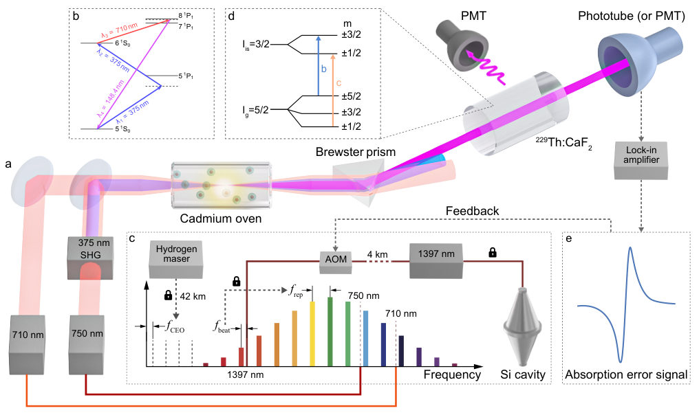
<figcaption class="paper-figure-caption"><b>Fig 1.</b> Fig. 1. Experimental platform for a solid-state 229Th nuclear clock. a, Experimental setup. Continuous-wave 148.4 nm VUV light is generated by four-wave mixing in cadmium vapour and sent to a home-grown 229Th:CaF2 crystal. Nuclear fluorescence is collected with a photomultiplier tube (PMT), while the transmitted VUV power is recorded with a phototube or a PMT. During absorption spectroscopy and clock operation, the 710 nm laser is modulated, and the transmitted VUV signal is detected via lock-in demodulation. b, Cadmium energy-level scheme for resonantly enhanced four-wave mixing. Two 375 nm photons drive the two-photon resonance between the 5 1S0 and 6 1S0 states, while one 710 nm photon...</figcaption>
</figure>
<figure class="paper-figure-card">
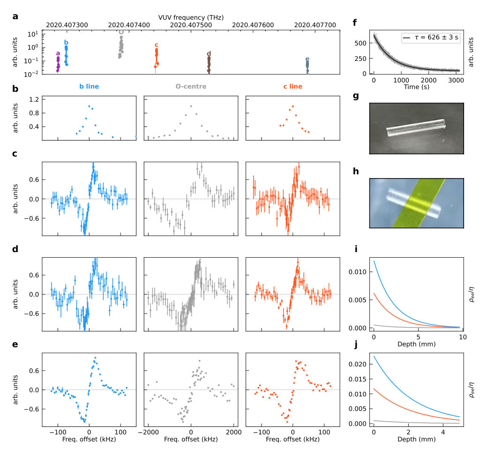
<figcaption class="paper-figure-caption"><b>Fig 2.</b> Fig. 2. Fluorescence and absorption spectroscopies of 229Th:CaF2 crystals. a, Overview of the observed nuclear transitions on an absolute VUV-frequency axis. Fitted line profiles of the D-centre quadrupole components and the O-centre feature are shown, with peak heights normalized to line b. b, Normalized fluorescence-excitation spectra of line b, the O-centre transition and line c. All error bars represent 1σ statistical uncertainties. c, Frequency-modulation absorption signals of the same three spectral features measured with an analog PMT in S1. Each data point is acquired for 80 seconds. d, Corresponding absorption signals measured with the phototube in S1. Each data point is acquired...</figcaption>
</figure>
<figure class="paper-figure-card">
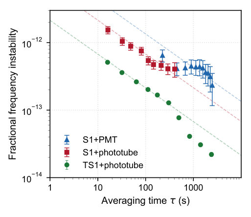
<figcaption class="paper-figure-caption"><b>Fig 3.</b> Fig. 3. Fractional frequency instability of the nu- clear clock. Fractional frequency instabilities under three configurations: the S1 crystal with signal measured by PMT (triangle), the S1 crystal with signal measured by phototube (square), the TS1 crystal with signal measured by phototube (circle). To better show the dependence of the frequency in- stabilities on the averaging time τ, a dashed line is plotted for each configuration, with a slope corresponding to 1/√τ.</figcaption>
</figure>
</div>

<p><strong>Summary.</strong> The paper reports the successful demonstration of a novel nuclear clock based on the isomeric transition of $^{229}	ext{Th}$ within a solid-state crystal host. By stabilizing a VUV laser to this nuclear resonance, the authors achieve high frequency stability ($2 	imes 10^{-12}/\sqrt{	au} 	ext{ s}$). This work is significant because it extends quantum metrology into the realm of nuclear physics for next-generation compact timekeeping and fundamental constant measurements.</p>
<p><strong>Why it may be interesting.</strong> This work directly advances quantum metrology by extending high-precision timing standards from electronic transitions (like those used in optical clocks) to nuclear energy levels, opening a new platform for fundamental physics tests using solid-state systems.</p>
<details>
<summary>Detailed structure</summary>
<p><strong>Main problem.</strong> To develop a robust, compact frequency reference by utilizing the low-lying isomeric transition in the $^{229}	ext{Th}$ nucleus instead of traditional electronic transitions.</p>
<p><strong>Main result.</strong> The authors successfully demonstrated operation of a solid-state nuclear clock, achieving a fractional frequency instability of $2 	imes 10^{-12}/\sqrt{	au} 	ext{ s}$, and confirmed the reproducibility of this reference across different crystal batches.</p>
<p><strong>Method.</strong> Clock stabilization is achieved by locking a continuous-wave vacuum-ultraviolet (VUV) laser to the resolved nuclear transition using absorption spectroscopy read out via phototube photocurrent detection.</p>
<p><strong>Model / system.</strong> The system uses $^{229}	ext{Th}$ embedded in solid-state hosts, specifically $   ext{CaF}_2$ crystals ($ ext{S}1$ and $  ext{TS}1$). The interrogation relies on the laser-accessible isomeric transition frequency.</p>
<p><strong>Key observables.</strong> Fractional frequency instability ($\Delta f/f$), absorption contrast, center frequencies of resolved nuclear transitions ($b$-line), and signal-to-noise ratio (SNR).</p>
<p><strong>Important parameters / regimes.</strong> VUV wavelength of $148.4 	ext{ nm}$; clock stability limit of $2 	imes 10^{-12}/\sqrt{	au} 	ext{ s}$; temperature control near $301	ext{ K}$.</p>
<p><strong>Assumptions / limitations.</strong> The method assumes that the nuclear transition can serve as a stable, traceable discriminator for an external oscillator, and that high-SNR absorption measurements are feasible.</p>
<p><strong>Figures summary.</strong> Figures illustrate the complex experimental setup involving VUV laser generation (via four-wave mixing), optical frequency chain stabilization using frequency combs, and spectroscopic results comparing fluorescence and absorption signals across different crystal types.</p>
<p><strong>Paper structure.</strong> The paper details the theoretical motivation for nuclear clocks, describes the advanced experimental apparatus required to generate and stabilize the necessary VUV light, presents measurements characterizing the spectral lines in solid-state hosts, and culminates in demonstrating clock operation and stability analysis.</p>
</details>
<details>
<summary>Abstract</summary>
<p>Atomic clocks have made time and frequency the most precisely measured quantities in physics, progressing from microwave standards that realize the SI second to optical clocks that now reach unprecedented levels of precision. A nuclear clock would shift the frequency reference from an electronic transition to the uniquely low-lying, laser-accessible isomeric transition in the $^{229}$Th nucleus, offering a route to compact, robust timekeeping and sensitive tests of fundamental physics. However, turning recent advances in spectroscopy of the $^{229}$Th nuclear resonance into clock operation requires the nuclear transition to serve as a stable discriminator for steering a traceable oscillator. Here we demonstrate the operation of a $^{229}$Th nuclear clock by stabilizing a continuous-wave narrow-linewidth 148.4 nm vacuum-ultraviolet (VUV) laser to a resolved nuclear transition in a solid-state host. This clock operation is enabled by fast frequency discrimination based on phototube photocurrent readout of the transmitted VUV power. The 10 $μ$W VUV laser, generated by four-wave mixing in cadmium vapour, provides a high-signal-to-noise absorption signal from a home-grown $^{229}$Th:CaF$_2$ crystal, allowing the laser to be locked to a weakly temperature-sensitive nuclear transition. The clock reaches a fractional frequency instability of $2\times10^{-12}/\sqrt{τ/s} $, where $τ$ is the averaging time. Remarkably, nuclear-clock frequencies measured with two distinct crystals agree at the $10^{-13}$ level, demonstrating the reproducibility of solid-state nuclear frequency references. By making a laser-addressed atomic nucleus an operational clock reference, this work extends quantum metrology from electronic to nuclear transitions, and opens a new platform for compact clocks, solid-state nuclear quantum sensors and precision tests of fundamental physics.</p>
</details>
<p><sub><a href="#top">↑ back to top</a></sub></p>

<p><a id="paper-2606.09685"></a></p>
<h3 id="crystallography-of-periodic-nanotextures-in-a-strained-mott-insulator"><a href="http://arxiv.org/abs/2606.09685v1">Crystallography of periodic nanotextures in a strained Mott insulator</a></h3>
<p><strong>Authors:</strong> Benjamin Z. Gregory, Yorick A. Birkhölzer, Noah Schnitzer, Ziming Shao, Jeff Hodgson, Suchismita Sarker, Jacob P. Ruff, Berit H. Goodge, David A. Muller, Kyle M. Shen, Darrell G. Schlom, Andrej Singer<br>
<strong>Type:</strong> both · <strong>Category:</strong> strongly correlated electrons · <strong>PDF:</strong> <a href="https://arxiv.org/pdf/2606.09685v1">https://arxiv.org/pdf/2606.09685v1</a><br>
<strong>Analysis basis:</strong> full PDF text, analyzed in chunks
<strong>Topic relevance:</strong> <code>Frenkel-Kontorova</code> <strong>2/5</strong> · <code>Keldysh / 2PI / non-Gaussian methods</code> <strong>1/5</strong> · <code>analog quantum simulation</code> <strong>1/5</strong> · <code>driven-dissipative phase transition</code> <strong>1/5</strong> · <code>spintronics-quantum-optics interface</code> <strong>1/5</strong></p>
<div class="figure-strip-hint">↔ Scroll figures horizontally</div>
<div class="paper-figures-scroll">
<figure class="paper-figure-card">
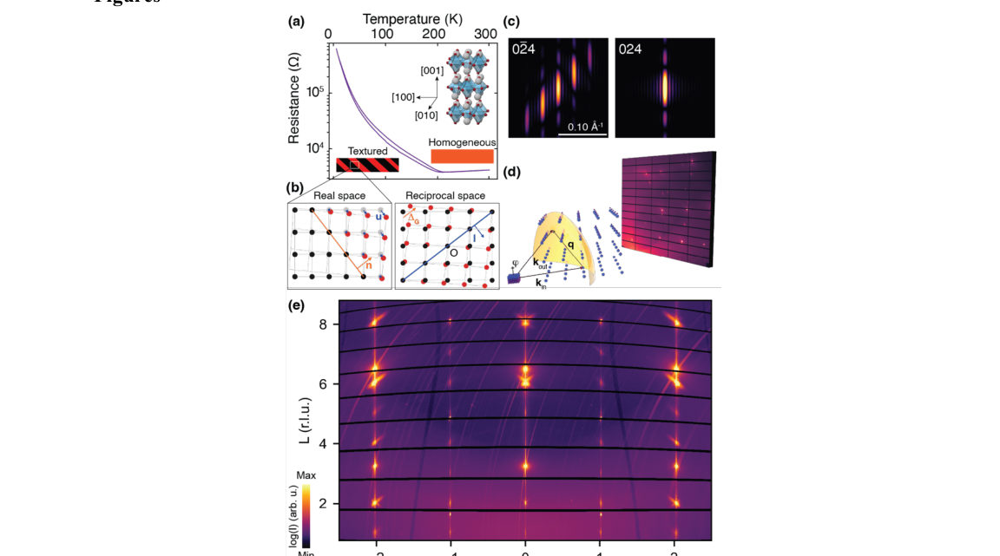
<figcaption class="paper-figure-caption"><b>Fig 1.</b> Figure 1: Striped nanotexture and reciprocal space mapping of Ca2RuO4. (a) Resistivity of the strained Ca2RuO4 thin film showing a metal-insulator transition at 200 K. The film is homogeneous at high temperatures and forms a periodic nanotexture of distinct structural domains resembling the bulk L-Pbca and S-Pbca phases (red and black stripes). (Inset) Ca2RuO4 unit cell (Ca: gray, O: red, Ru: blue). (b) Real space: atomic positions in the two structural variants, with interface normal 𝒏 and the displacements 𝒖 all parallel to 𝐥. Reciprocal space: The reciprocal lattice points of the distorted lattice are shifted by 𝚫𝐆 along 𝐧. The lattice remains undistorted along the line through the...</figcaption>
</figure>
<figure class="paper-figure-card">
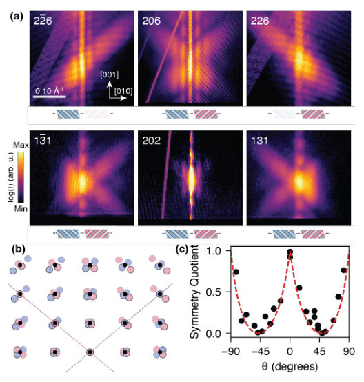
<figcaption class="paper-figure-caption"><b>Fig 2.</b> Figure 2: Parameter-free collapse of satellite intensities onto the invariant-plane-strain prediction. (a) Magnified reciprocal space maps around selected reciprocal lattice points. The schematics under each panel show which interface variant contributes to the satellite pattern at that reflection (interface along (012) (blue), or along (01&#x27;2) (red), or both). (b) Reciprocal-space schematic showing the contributions of both interface variants. Symbols denote the two coexisting structures (S-Pbca, no edge color; L-Pbca, black edge). Dashed lines are normal to the displacement direction for each interface variant. (c) Symmetry quotient measured at 24 symmetry-inequivalent reflections with...</figcaption>
</figure>
<figure class="paper-figure-card">
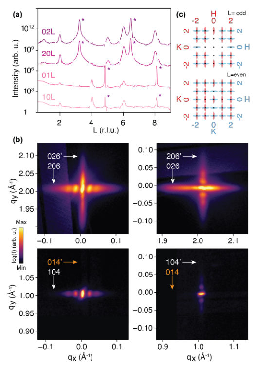
<figcaption class="paper-figure-caption"><b>Fig 3.</b> Figure 3: Crystallography of coexisting domains. (a) Crystal truncation rods extracted from the 3D reciprocal-space map of Ca2RuO4 at 50 K, taken along l at four in-plane reciprocal-lattice positions hk = 02, 20, 01, and 10; asterisks mark peaks from the LaAlO3 substrate. At 300 K, the peak intensities are similar, and satellites are absent (Fig. S4). (b) Satellite patterns around the indicated reflections, shown in slices through reciprocal space at fixed l. Unprimed indices label the primary orthorhombic twin; primed indices label the 90°-rotated twin. At 206 and 026 (top row), both reflections are Pbca-allowed, and the satellites from the two variants form a cross. At 104 and 014 (bottom...</figcaption>
</figure>
</div>

<p><strong>Summary.</strong> This work uses advanced X-ray diffraction techniques to study strain-induced stripe domains in a Mott insulator film. By applying classical invariant-plane-strain crystallography theory, the authors successfully model and predict the observed satellite scattering patterns. This confirms that the nanoscale domain structure is fundamentally governed by lattice compatibility rather than solely electronic interactions.</p>
<p><strong>Why it may be interesting.</strong> While focused on solid-state structure, the analysis of phase transitions, lattice coupling, and symmetry breaking in a correlated material like RuO4 provides insights into how electronic correlations manifest through structural degrees of freedom, relevant to understanding emergent quantum phases.</p>
<details>
<summary>Detailed structure</summary>
<p><strong>Main problem.</strong> The study investigates the spontaneous formation of alternating structural phases (stripes) in epitaxially strained Ca2RuO4 thin films below a metal-insulator transition, and determines the crystallographic principles governing these domain patterns.</p>
<p><strong>Main result.</strong> Satellite-pattern intensities collapse onto a single parameter-free curve predicted by classical invariant-plane-strain crystallography, confirming the existence of a coherent martensitic laminate structure.</p>
<p><strong>Method.</strong> The research combines large-volume X-ray reciprocal-space mapping with theoretical modeling based on Invariant Plane Strain (IPS) deformation theory to analyze diffraction patterns.</p>
<p><strong>Model / system.</strong> The physical system is epitaxially strained Ca2RuO4 thin films, a Mott insulator undergoing structural transitions. The analysis models the domain geometry using classical invariant-plane-strain crystallography, which dictates how coherent interfaces accommodate transformation strain.</p>
<p><strong>Key observables.</strong> Satellite-pattern intensities across multiple Bragg reflections; Symmetry Quotient (SQ'') quantifying relative satellite streak brightness; shifts in reciprocal lattice vectors ($\Delta\mathbf{G}$).</p>
<p><strong>Important parameters / regimes.</strong> Temperature (below metal-insulator transition); Strain magnitude; Domain width (few-nm); Crystallographic symmetry group (Pbca).</p>
<p><strong>Assumptions / limitations.</strong> The domain geometry is governed by Classical invariant-plane-strain crystallography, and the analysis assumes epitaxial strain enforces a compatible plane templating the periodic laminate structure.</p>
<p><strong>Figures summary.</strong> Figures show parameter-free collapse of satellite intensities onto IPS predictions; diagrams illustrate interface shifts ($\Delta\mathbf{G}$); STEM images confirm coherent interfaces between L and S phases.</p>
<p><strong>Paper structure.</strong> The paper progresses from identifying the structural transition and domain formation via X-ray mapping, developing the theoretical framework using invariant plane strain crystallography to model the satellite intensity dependence, and finally confirming the model's predictive power across multiple reflections.</p>
</details>
<details>
<summary>Abstract</summary>
<p>Here we investigate stripes of alternating structural phases spontaneously forming in epitaxially strained $Ca_2RuO_4$ thin films below the metal-insulator transition. Using large-volume X-ray reciprocal-space mapping, we show that satellite-pattern intensities across 24 symmetry-inequivalent Bragg reflections collapse onto a single parameter-free curve. The collapse identifies a coherent martensitic laminate of few-nm-wide domains separated by ${012}$ interfaces, with displacements along $\left\langle01\bar{2}\right\rangle$. Satellite-extinction analysis demonstrates that both coexisting phases retain the bulk orthorhombic space group despite the pseudocubic $LaAlO_3$ substrate, biaxial epitaxial strain, and intrinsic strain at the interfaces. Classical invariant-plane-strain crystallography thus governs the nanoscale domain geometry of a Mott insulator with intertwined magnetic, electronic, and lattice order.</p>
</details>
<p><sub><a href="#top">↑ back to top</a></sub></p>

<p><a id="paper-2606.09462"></a></p>
<h3 id="free-fermions-in-disguise-without-exponential-degeneracies"><a href="http://arxiv.org/abs/2606.09462v1">Free fermions in disguise without exponential degeneracies</a></h3>
<p><strong>Authors:</strong> Balázs Pozsgay<br>
<strong>Type:</strong> theory · <strong>Category:</strong> statistical mechanics · <strong>PDF:</strong> <a href="https://arxiv.org/pdf/2606.09462v1">https://arxiv.org/pdf/2606.09462v1</a><br>
<strong>Analysis basis:</strong> full PDF text, analyzed in chunks
<strong>Topic relevance:</strong> <code>analog quantum simulation</code> <strong>2/5</strong> · <code>entanglement &amp; information structure</code> <strong>1/5</strong> · <code>exotic spin models in light-matter</code> <strong>1/5</strong> · <code>non-equilibrium dynamics</code> <strong>1/5</strong></p>
<div class="figure-strip-hint">↔ Scroll figures horizontally</div>
<div class="paper-figures-scroll">
<figure class="paper-figure-card">
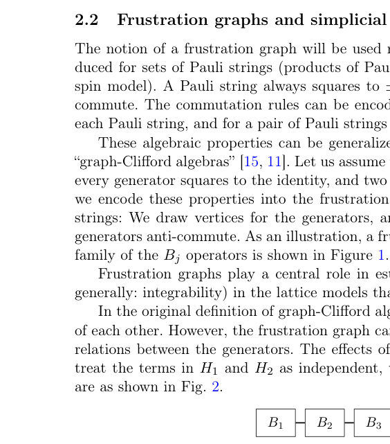
<figcaption class="paper-figure-caption"><b>Fig 1.</b> Figure 1: Frustration graph for one copy of the Ising-type algebra for M = 6.</figcaption>
</figure>
<figure class="paper-figure-card">
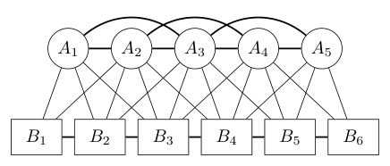
<figcaption class="paper-figure-caption"><b>Fig 2.</b> Figure 2: Frustration graph for the Hamiltonian H1 for M = 6. The terms Ak are algebraically dependent on the generators Bj and ˜Bj; however, if we focus on H1 alone, then we can regard them as independent operators, and thus the corresponding independent vertices are added to the graph. The Hamiltonian H2 has an identical frustration graph.</figcaption>
</figure>
<figure class="paper-figure-card">
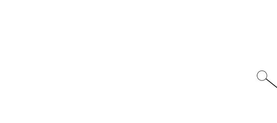
<figcaption class="paper-figure-caption"><b>Fig 3.</b> Figure 3: The claw graph</figcaption>
</figure>
<figure class="paper-figure-card">
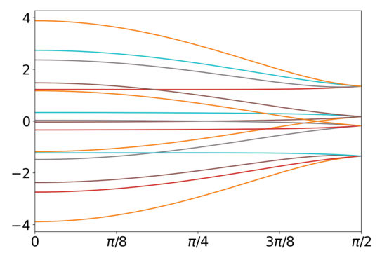
<figcaption class="paper-figure-caption"><b>Fig 4.</b> Figure 4: The spectrum of Hθ as a function of θ, for M = 4. For each value of θ ̸= π/2 there are 16 different eigenvalues, each with a homogeneous degeneracy of 2, corresponding to the chain having length L = M +1 = 5. They collapse to 4 eigenvalues at θ = π/2, corresponding to the FFD model, which has S = 2 eigenmodes for M = 4.</figcaption>
</figure>
</div>

<p><strong>Summary.</strong> This paper introduces a novel, exactly solvable model for coupled spin chains that avoids the exponential degeneracies found in previous free-fermionic models. By utilizing advanced algebraic techniques involving transfer matrices and graph theory, the authors prove the Hamiltonian can be diagonalized into non-interacting fermionic modes. This provides a powerful theoretical tool for studying quantum many-body systems with controlled spectral properties.</p>
<p><strong>Why it may be interesting.</strong> The rigorous mathematical framework connecting algebraic structures (graph theory) directly to the solvability and spectral properties of interacting quantum spin chains is highly relevant for understanding integrability in many-body physics.</p>
<details>
<summary>Detailed structure</summary>
<p><strong>Main problem.</strong> To present a solvable quantum spin chain model that exhibits free-fermionic structure without suffering from exponential degeneracies, which plagued previous related models.</p>
<p><strong>Main result.</strong> The proposed Hamiltonian, derived as an interpolation between known solvable chains, is shown to be exactly solvable via free-fermion techniques, yielding a spectrum with controlled, non-exponential degeneracies.</p>
<p><strong>Method.</strong> The analysis heavily relies on abstract algebra (graph-Clifford algebras) and the construction of transfer matrices whose factorization proves diagonalizability into quadratic forms of fermionic operators.</p>
<p><strong>Model / system.</strong> The system is an FFD-type spin chain model, realized as a perturbation of two coupled Ising chains. It can also be viewed as interpolating between a standard Jordan-Wigner solvable XY chain and the original FFD model.</p>
<p><strong>Key observables.</strong> Spectral degeneracies (the absence of exponential growth), single-particle eigenmodes ($\epsilon_{a,k}$), and the structure of the transfer matrix $    ext{TM}(u)$.</p>
<p><strong>Important parameters / regimes.</strong> Coupling constants ($\lambda$, $e\lambda$), chain length ($M$), and the interpolation parameter $\lambda$ which tunes between different solvable limits.</p>
<p><strong>Assumptions / limitations.</strong> The analysis assumes that treating the two coupled Hamiltonians ($H_1$ and $H_2$) independently is valid for constructing their respective free-fermionic structures, and it requires specific commutation relations among edge operators to ensure compatibility.</p>
<p><strong>Figures summary.</strong> Figures illustrate frustration graphs associated with the Ising-type algebras, confirming structural properties like being interval graphs.</p>
<p><strong>Paper structure.</strong> The paper progresses by defining the coupled algebraic structure, establishing that $H_1$ and $H_2$ are individually free-fermionic due to their graph structure. It then proves their mutual commutativity using transfer matrix techniques, culminating in a full diagonalization of $H_1 \pm H_2$.</p>
</details>
<details>
<summary>Abstract</summary>
<p>Recently, a number of spin chain models have been discovered that are solvable via hidden free-fermionic structures, going beyond the Jordan-Wigner paradigm. However, all examples in the literature displayed degeneracies that grow exponentially with the volume and that are homogeneous in the spectrum (identical degeneracies for all energy levels). In this note we present a model that can be solved by ``free fermions in disguise'' (FFD), such that the spectrum is free from exponential degeneracies for generic coupling constants. The model can be seen as a particular perturbation of two Ising chains. Alternatively, it can be realized as an interpolation between a standard Jordan-Wigner solvable chain and the original FFD model of Fendley. We used ChatGPT Pro 5.4 and 5.5 as a research assistant; in the Supplemental Material we provide details about the collaboration between the AI and the human author.</p>
</details>
<p><sub><a href="#top">↑ back to top</a></sub></p>

<p><a id="paper-2606.07814"></a></p>
<h3 id="hamiltonian-guided-leverage-embedding-robust-subspace-compression-for-efficient-qaoa-parameter-estimation"><a href="http://arxiv.org/abs/2606.07814v1">Hamiltonian-Guided Leverage Embedding: Robust Subspace Compression for Efficient QAOA Parameter Estimation</a></h3>
<p><strong>Authors:</strong> Sumanta Mukherjee, Kalyan Dasgupta, Surya Shravan Kumar Sajja, Kameshwaran Sampath, Abhishek Singh, Dhriti Verma, Dzung Phan, Jayant Kalagnanam<br>
<strong>Type:</strong> theory · <strong>Category:</strong> quantum information and computing · <strong>PDF:</strong> <a href="https://arxiv.org/pdf/2606.07814v1">https://arxiv.org/pdf/2606.07814v1</a><br>
<strong>Analysis basis:</strong> full PDF text, analyzed in chunks
<strong>Topic relevance:</strong> <code>quantum measurements</code> <strong>2/5</strong> · <code>entanglement &amp; information structure</code> <strong>1/5</strong> · <code>measurement-induced transitions</code> <strong>1/5</strong> · <code>methods for driven-dissipative</code> <strong>1/5</strong></p>
<div class="figure-strip-hint">↔ Scroll figures horizontally</div>
<div class="paper-figures-scroll">
<figure class="paper-figure-card">
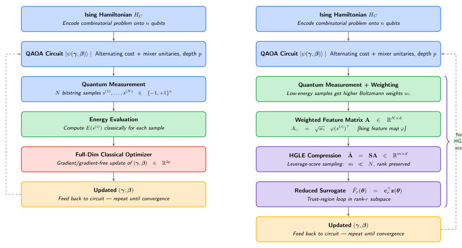
<figcaption class="paper-figure-caption"><b>Fig 1.</b> Fig. 1: Pipeline comparison. Left: Standard QAOA loop with cost O(N · d) per iteration. Right: HGLE-QAOA inserts two stages (purple): (1) constructing a weighted Ising feature matrix A ∈RN×d, and (2) leverage-score compression to ˜A ∈Rm×d with m ≪N. The optimizer then works in a rank-r surrogate space with formal argmin-preservation guarantees (Corollary 5).</figcaption>
</figure>
<figure class="paper-figure-card">
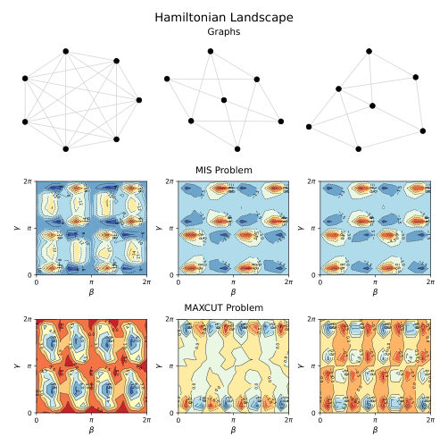
<figcaption class="paper-figure-caption"><b>Fig 2.</b> Fig. 2: System-dependent Hamiltonian energy landscapes. Top row: Three graph instances of increasing sparsity (dense, moderate, sparse). Middle row: QAOA energy landscape ⟨HC⟩(γ, β) for the Maximum Independent Set (MIS) problem on each graph. Bottom row: Corresponding landscapes for the Max-Cut problem. Dense graphs produce highly rugged landscapes with numerous local min- ima and narrow basins, while sparser graphs yield smoother contours with more accessible global structure. The landscape topology also varies markedly between problem types: MIS landscapes exhibit isolated, irregularly shaped basins, whereas Max-Cut landscapes display greater periodicity along γ. These system- and...</figcaption>
</figure>
<figure class="paper-figure-card">
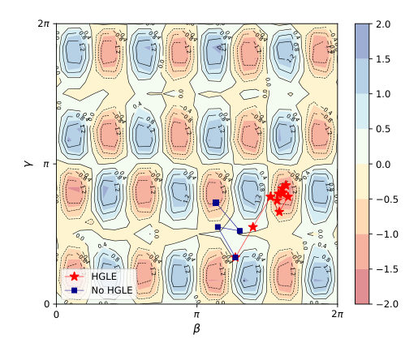
<figcaption class="paper-figure-caption"><b>Fig 3.</b> Fig. 3: Optimization trajectories on the QAOA energy landscape. Contours show ⟨HC⟩(β, γ) for a Max-Cut instance at depth p=1. Red stars: HGLE-enabled iterates converge quickly within a deep basin. Blue squares: randomly initialized search wanders through flat and mixed-sign regions before reaching a minimum.</figcaption>
</figure>
<figure class="paper-figure-card">
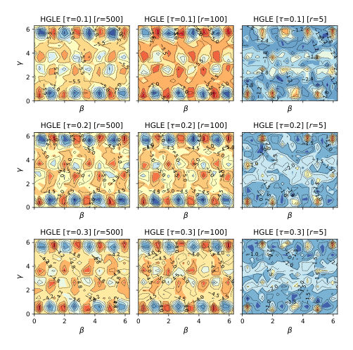
<figcaption class="paper-figure-caption"><b>Fig 4.</b> Fig. 4: Sensitivity of the HGLE energy landscape to regularization τ and retained rank r. Each panel shows the predicted energy ˆFr(β, γ) for a 7-vertex Max-Cut instance at depth p=1. Rows vary the regularization strength (τ = 0.1, 0.2, 0.3); columns vary the retained rank (r = 500, 100, 5). At r ≥100, the landscape is well- resolved and largely insensitive to τ, confirming robust compression. At r = 5 the surrogate degrades significantly, with shallower energy values and loss of contour structure.</figcaption>
</figure>
<figure class="paper-figure-card">
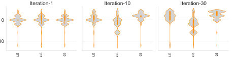
<figcaption class="paper-figure-caption"><b>Fig 5.</b> Fig. 5: Sample enrichment (8-node Max-Cut). Violin plots of ⟨HC⟩at iterations 1, 10, 30. Rank-25 concentrates near optimal (most negative) energies by iteration 30; No HGLE retains a broader distribution extending toward less favorable energies.</figcaption>
</figure>
</div>

<p><strong>Summary.</strong> This paper introduces Hamiltonian-Guided Leverage Embedding (HGLE) to solve the computational bottleneck in optimizing QAOA parameters. HGLE exploits the inherent low-rank structure of measurement data by compressing it using leverage-score sampling. This allows for robust, resource-efficient parameter estimation for solving hard combinatorial optimization problems on near-term quantum hardware.</p>
<p><strong>Why it may be interesting.</strong> While focused on optimization, the techniques developed—low-rank approximation of quantum measurement data—are highly relevant for characterizing complex quantum states or simulating dynamics in strongly correlated systems where full state vector evolution is intractable.</p>
<details>
<summary>Detailed structure</summary>
<p><strong>Main problem.</strong> The primary challenge is efficiently estimating the variational parameters ($\gamma$ and $eta$) for QAOA, which involves optimizing over a high-dimensional, noisy, non-convex landscape.</p>
<p><strong>Main result.</strong> The proposed Hamiltonian-Guided Leverage Embedding (HGLE) algorithm significantly reduces computational cost by compressing the measurement feature matrix into a low-rank subspace while preserving critical geometric information.</p>
<p><strong>Method.</strong> HGLE is a hybrid pipeline that uses leverage-score row sampling to compress the weighted Ising feature matrix derived from QAOA measurements, allowing classical optimization in a much lower dimension.</p>
<p><strong>Model / system.</strong> The work focuses on the Quantum Approximate Optimization Algorithm (QAOA) applied to combinatorial problems like Max-Cut and MIS. The system is modeled by an Ising Hamiltonian ($H_C$) acting on qubits.</p>
<p><strong>Key observables.</strong> Approximation Ratio (solution quality relative to optimum), Circuit Evaluation Count, Energy Landscape $\hat{E}(\gamma, eta)$.</p>
<p><strong>Important parameters / regimes.</strong> Variational parameters ($\gamma, eta$), retained rank ($r$), bandwidth ($k$) for sparsification, and the leverage score sampling rate ($m/N$).</p>
<p><strong>Assumptions / limitations.</strong> The core assumption is that the classical feature matrices derived from QAOA measurements exhibit a pronounced low-rank structure that can be robustly captured by leverage-score sampling.</p>
<p><strong>Figures summary.</strong> Figures compare optimization trajectories (HGLE vs. standard), show energy landscape sensitivity to rank/regularization, and plot scaling results for approximation ratios and circuit budgets across varying qubit counts and depths.</p>
<p><strong>Paper structure.</strong> The paper introduces the bottleneck of QAOA parameter estimation, details the HGLE algorithm using leverage-score compression on the feature matrix $\mathbf{A}$, provides formal error bounds based on rank preservation ($\kappa_r$), and validates the method's performance across various graph problems (Max-Cut/MIS) and hardware constraints (sparsification).</p>
</details>
<details>
<summary>Abstract</summary>
<p>The Quantum Approximate Optimization Algorithm (QAOA) is a hybrid quantum-classical framework for combinatorial optimization on near-term quantum devices. A central bottleneck is the classical estimation of its variational parameters γ and β, which must be optimized over a high-dimensional, non-convex landscape corrupted by sampling noise. We observe that the classical feature matrices constructed from QAOA measurement samples exhibit pronounced low-rank structure, and exploit this property for noise-robust, reduced-dimension parameter search. We present the Hamiltonian-Guided Leverage Embedding (HGLE) algorithm - a hybrid pipeline that encodes low-energy quantum samples into a weighted Ising feature matrix and compresses it via leverage-score row sampling, provably preserving the dominant rank-rsubspace geometry. The compressed representation drives a classical trust-region loop for (γ, β) estimation at a fraction of the original cost. We provide formal guarantees for rank preservation and energy approximation error, and demonstrate robustness across problem types (Max-Cut, Maximum Independent Set) and graph topologies of varying density.</p>
</details>
<p><sub><a href="#top">↑ back to top</a></sub></p>

<p><a id="paper-2606.08509"></a></p>
<h3 id="what-is-a-pattern-in-statistical-mechanics-formalizing-structure-and-patterns-in-one-dimensional-spin-lattice-models-with-computational-mechanics"><a href="http://arxiv.org/abs/2606.08509v1">What Is a Pattern in Statistical Mechanics? Formalizing Structure and Patterns in One-Dimensional Spin Lattice Models with Computational Mechanics</a></h3>
<p><strong>Authors:</strong> Omar Aguilar<br>
<strong>Type:</strong> theory · <strong>Category:</strong> statistical mechanics · <strong>PDF:</strong> <a href="https://arxiv.org/pdf/2606.08509v1">https://arxiv.org/pdf/2606.08509v1</a><br>
<strong>Analysis basis:</strong> full PDF text, analyzed in chunks
<strong>Topic relevance:</strong> <code>entanglement &amp; information structure</code> <strong>2/5</strong> · <code>Frenkel-Kontorova</code> <strong>1/5</strong> · <code>Keldysh / 2PI / non-Gaussian methods</code> <strong>1/5</strong> · <code>methods for driven-dissipative</code> <strong>1/5</strong></p>
<div class="figure-strip-hint">↔ Scroll figures horizontally</div>
<div class="paper-figures-scroll">
<figure class="paper-figure-card">
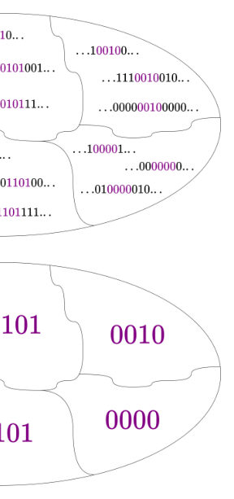
<figcaption class="paper-figure-caption"><b>Fig 1.</b> Figure 2. Graphical representation of coarsegrained Ising phase space. Only the purple spins are assigned fixed indices. For clarity, down spins ↓are represented as 0 instead of −1.</figcaption>
</figure>
<figure class="paper-figure-card">
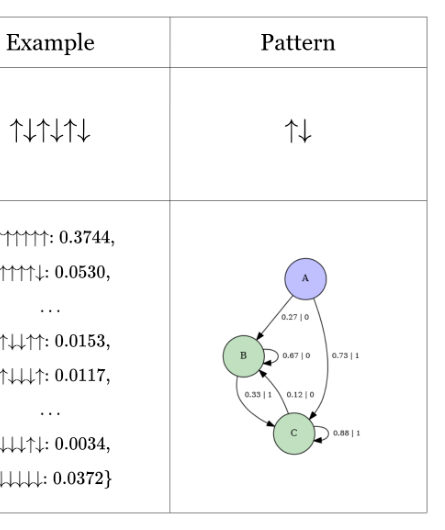
<figcaption class="paper-figure-caption"><b>Fig 2.</b> Figure 3. Graphical representation of configuration and ensemble pattern concepts.</figcaption>
</figure>
<figure class="paper-figure-card">
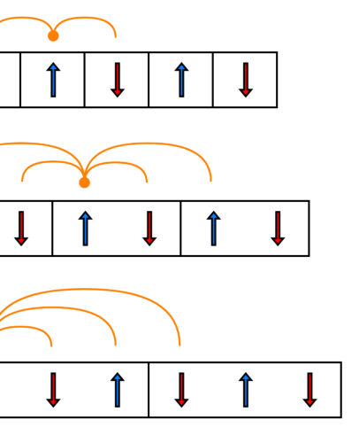
<figcaption class="paper-figure-caption"><b>Fig 3.</b> Figure 4. Illustration of spin interactions in Ising models with neighboring radii R = 1 (top), R = 2 (middle), and R = 3 (bottom).</figcaption>
</figure>
<figure class="paper-figure-card">
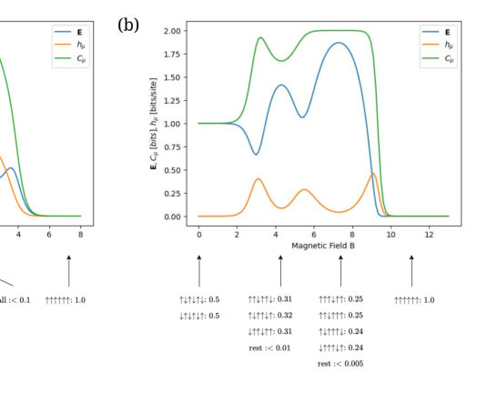
<figcaption class="paper-figure-caption"><b>Fig 4.</b> Figure 5. (a) hµ, E and Cµ vs. J1 for nnn Ising model with J2 = −1.2, B = 0.05 and T = 1. (b) hµ, E and Cµ vs. B for 3-range Ising model with J1 = −2.8, J2 = −1.3, J3 = −0.45 and T = 0.2.</figcaption>
</figure>
<figure class="paper-figure-card">
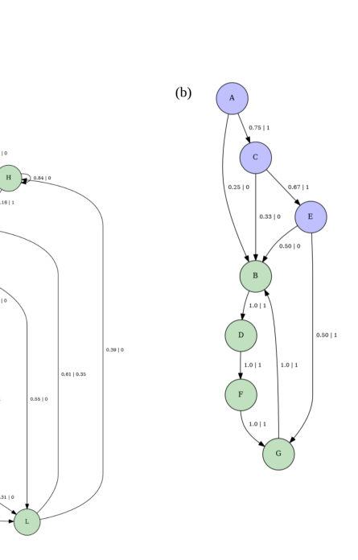
<figcaption class="paper-figure-caption"><b>Fig 5.</b> Figure 6. (a) ϵ-machine of 3-range Ising model with B = 0.2, T = 4, J1 = 1, J2 = 1 and J3 = 1. (b) ϵ-machine of 3-range Ising model with B = 8, T = 0.2, J1 = −3, J2 = −2 and J3 = −2.</figcaption>
</figure>
</div>

<p><strong>Summary.</strong> This paper develops a novel framework to quantify 'structure' and 'pattern' in 1D spin lattice models by treating them as stochastic processes. It utilizes information theory measures alongside computational mechanics concepts ($\epsilon$-machines) to analyze these patterns. The key finding is that this rigorous, machine-based approach successfully reproduces the statistical predictions of classical statistical mechanics for various physical Hamiltonians.</p>
<p><strong>Why it may be interesting.</strong> While focused on classical statistical mechanics, the rigorous application of information-theoretic tools like $\epsilon$-machines provides a powerful, generalizable mathematical language for characterizing complex physical states, which has parallels in understanding quantum correlations or entanglement structure.</p>
<details>
<summary>Detailed structure</summary>
<p><strong>Main problem.</strong> The work aims to formalize the abstract concepts of 'structure' and 'pattern' within statistical mechanics, moving beyond simple entropy measures.</p>
<p><strong>Main result.</strong> The authors demonstrate that analyzing 1D spin lattice models using information-theoretic tools (like $\epsilon$-machines) yields results consistent with established Boltzmann distributions, providing a computational framework for pattern recognition in physical systems.</p>
<p><strong>Method.</strong> The methodology combines concepts from information theory (Shannon entropy rate, statistical complexity) and theoretical computer science by modeling the system as a stochastic process analyzed via $\epsilon$-machines.</p>
<p><strong>Model / system.</strong> The primary models are one-dimensional spin lattice systems, including finite-range Ising, solid-on-solid, and three-body models. The analysis treats these configurations as realizations of a stationary stochastic process governed by an underlying Hamiltonian.</p>
<p><strong>Key observables.</strong> Shannon entropy rate ($h_\mu$), Excess Entropy ($E$), Statistical Complexity ($C_\mu$), and the structure defined by the $\epsilon$-machine (PDFM).</p>
<p><strong>Important parameters / regimes.</strong> Temperature ($T$) or inverse temperature ($eta$), coupling constants ($J, B$), and system size/boundary conditions.</p>
<p><strong>Assumptions / limitations.</strong> The analysis assumes that the physical pattern can be captured by finding the minimal abstract machine ($\epsilon$-machine) generating the stochastic process, and it relies on defining probability measures over a $\sigma$-algebra of configurations.</p>
<p><strong>Figures summary.</strong> Figures illustrate comparisons between information measures ($C_\mu, h_\mu, E$) versus temperature for Ising models, and graphical representations comparing the structure derived from these measures against the connectivity and state transitions within the inferred $\epsilon$-machine.</p>
<p><strong>Paper structure.</strong> The paper progresses by first introducing the formalisms (information theory, stochastic processes), developing the machinery ($\epsilon$-machines) to quantify patterns, applying this framework systematically to multiple 1D spin models, and finally comparing these computational findings against known thermodynamic results.</p>
</details>
<details>
<summary>Abstract</summary>
<p>This work formalizes the notions of structure and pattern for three distinct one-dimensional spin-lattice models (finite-range Ising, solid-on-solid, and three-body), using information-theoretic and computation-theoretic methods. We begin by presenting a novel derivation of the Boltzmann distribution for finite one-dimensional spin configurations embedded in infinite ones. We next recast this distribution as a stochastic process, thereby enabling us to analyze each spin-lattice model within the theory of computational mechanics. In this framework, the process's structure is quantified by excess entropy (predictable information) and statistical complexity (stored information), and the process's structure-generating mechanism is specified by its epsilon-machine. To assess compatibility with statistical mechanics, we compare the configurations jointly determined by the information measures and epsilon-machines to typical configurations drawn from the Boltzmann distribution, and we find agreement. We also include a self-contained primer on computational mechanics and provide code implementing the information measures and spin-model distributions.</p>
</details>
<p><sub><a href="#top">↑ back to top</a></sub></p>

<p><a id="paper-2606.09778"></a></p>
<h3 id="who-earns-the-safety-intervention-aware-quantum-predictive-control-with-safety-attribution"><a href="http://arxiv.org/abs/2606.09778v1">Who Earns the Safety? Intervention-Aware Quantum Predictive Control with Safety Attribution</a></h3>
<p><strong>Authors:</strong> Yifan Wang<br>
<strong>Type:</strong> both · <strong>Category:</strong> other · <strong>PDF:</strong> <a href="https://arxiv.org/pdf/2606.09778v1">https://arxiv.org/pdf/2606.09778v1</a><br>
<strong>Analysis basis:</strong> full PDF text, analyzed in chunks
<strong>Topic relevance:</strong> <code>quantum measurements</code> <strong>2/5</strong> · <code>driven-dissipative phase transition</code> <strong>1/5</strong> · <code>methods for driven-dissipative</code> <strong>1/5</strong></p>
<div class="figure-strip-hint">↔ Scroll figures horizontally</div>
<div class="paper-figures-scroll">
<figure class="paper-figure-card">

<figcaption class="paper-figure-caption"><b>Fig 1.</b> Figure 1: Who earns the safety? (Left) A compact variational quantum circuit (VQC) policy proposes an action that a differentiable Control-Barrier-Function (CBF) projection and a deployment runtime guard edit before execution, so a post-filter loop can look safe even when the raw policy is not. (Center) Intervention-aware training adds a primal–dual intervention budget that penalizes reliance on the safety layers, pushing the policy to be intrinsically close to safe. (Right) Our safety-attribution evaluation decomposes the executed correction into a CBF term and a runtime-guard term and adds a guard-off stress test, so measured safety is credited to the policy that earned it rather than to...</figcaption>
</figure>
<figure class="paper-figure-card">
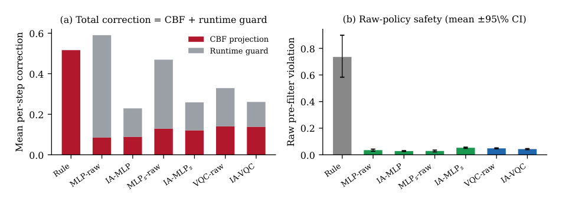
<figcaption class="paper-figure-caption"><b>Fig 2.</b> Figure 2: Safety attribution on guarded closed loops (n=60). (a) Total correction decomposes into CBF and runtime-guard parts: the headline “correction reduction” of raw clones is mostly deployment guard, not learned safety. (b) Raw pre-filter violation with 95% CIs: only the rule-based controller is grossly unsafe pre-filter; among learned policies, intervention-aware training keeps the compact VQC’s raw violations low.</figcaption>
</figure>
<figure class="paper-figure-card">
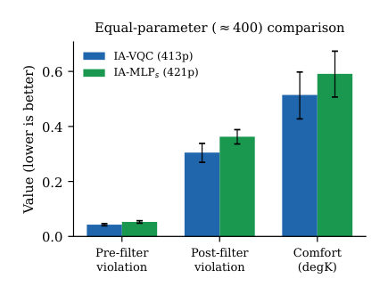
<figcaption class="paper-figure-caption"><b>Fig 3.</b> Figure 3: Equal-parameter (≈400) comparison with 95% CIs. The intervention-aware quantum policy is significantly safer (pre/post-filter) and more comfortable than a matched- capacity classical policy.</figcaption>
</figure>
<figure class="paper-figure-card">
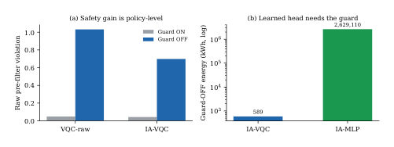
<figcaption class="paper-figure-caption"><b>Fig 4.</b> Figure 4: Guard-off evaluation. (a) Removing the runtime guard, IA-VQC still has significantly lower raw pre-filter violation than VQC-raw (∆=−0.33, p&lt;10−4): the gain is policy-level. (b) Without the guard, the learned-energy-head IA-MLP is exploited out of distribution and its energy ex- plodes (2.6 × 106 kWh), while IA-VQC remains stable— motivating the guarded design.</figcaption>
</figure>
</div>

<p><strong>Summary.</strong> This paper proposes an advanced quantum predictive control method to solve the problem of safety attribution in constrained learning. By explicitly penalizing reliance on external safety filters during training, the authors demonstrate that their quantum policy learns genuinely safer behaviors than classical counterparts when tested rigorously. This methodology provides a general framework for quantifying how much 'safety' is truly earned by the learned model versus its protective wrappers.</p>
<p><strong>Why it may be interesting.</strong> While the application is classical control theory (HVAC), the methodology involves training quantum circuits (VQC) for optimal control under strict physical constraints, which has implications for designing robust quantum controllers.</p>
<details>
<summary>Detailed structure</summary>
<p><strong>Main problem.</strong> The paper addresses the 'filter-masking problem' where safety filters can mask an upstream policy's incompetence, making it unclear whether safety is earned by the learned policy or its protective layers.</p>
<p><strong>Main result.</strong> An intervention-aware quantum control method significantly improves raw pre-filter safety and reduces reliance on external safety layers compared to baseline methods. Furthermore, this improvement is shown to be intrinsic to the policy itself when tested without the safety guards.</p>
<p><strong>Method.</strong> The authors introduce Intervention-Aware Variational Quantum Differentiable Predictive Control (IA-VQC-DPC), which trains a VQC policy using a primal-dual intervention budget that penalizes over-reliance on differentiable safety projections.</p>
<p><strong>Model / system.</strong> The work is tested in closed-loop, high-fidelity BOPTEST emulators simulating building HVAC control systems. The core components involve a Variational Quantum Circuit (VQC) acting as the policy, constrained by sequential Control-Barrier-Function (CBF) projection and runtime guards.</p>
<p><strong>Key observables.</strong> Raw pre-filter violation ($    ext{Vpre}$), post-filter violation ($   ext{Vpost}$), total safety-layer reliance ($c_{tot} = c_{CBF} + c_{guard}$), energy consumption, and the comparison of these metrics across different policy versions.</p>
<p><strong>Important parameters / regimes.</strong> The training uses a primal–dual intervention budget constraint; capacity is compared at an equal approximate 400-parameter budget between quantum and classical policies.</p>
<p><strong>Assumptions / limitations.</strong> Standard safety metrics are insufficient because they conflate filter success with true policy competence, necessitating the explicit decomposition of safety corrections into distinct terms (CBF vs. guard).</p>
<p><strong>Figures summary.</strong> Figures illustrate the concept of filter masking versus intervention-aware training, and show the results of safety attribution evaluation, confirming that improvements are policy-level.</p>
<p><strong>Paper structure.</strong> The paper first establishes the problem of safety misattribution using filters, then introduces IA-VQC-DPC with its specialized loss function. It details the safety attribution protocol and evaluates performance on building control emulators, culminating in guard-off tests to prove intrinsic policy safety gains.</p>
</details>
<details>
<summary>Abstract</summary>
<p>Hard safety filters are increasingly placed downstream of learned controllers to guarantee constraint satisfaction at run time. Yet a filtered controller that never violates a constraint may still have learned nothing about safety: the filter can silently repair an incompetent upstream policy, so that post-filter success measures the filter, not the policy. We argue that safe policy learning should ask who earns the safety - the policy or its protective layers - and we make this question measurable. We introduce Intervention-Aware Variational Quantum Differentiable Predictive Control (IA-VQC-DPC), which (i) trains a compact variational quantum circuit (VQC) policy under a primal-dual intervention budget that penalizes reliance on a differentiable Control-Barrier-Function (CBF) projection, and (ii) is evaluated with a safety-attribution protocol that decomposes the executed-trajectory correction into a CBF term and a deployment runtime-guard term, and stress-tests the policy with guard-off evaluation. On closed-loop, high-fidelity BOPTEST building-control emulators (5 seeds, 60 episodes per method), intervention-aware training significantly lowers the quantum policy's raw pre-filter violation and total safety-layer reliance (both p &lt; 10^-4) with no significant energy regression; at an equal approximately 400-parameter budget the quantum policy is significantly safer and more comfortable than a matched classical policy. Guard-off evaluation confirms the improvement is policy-level and exposes a valuable negative result: a learned differentiable energy head is only safe when paired with a distribution-aware runtime guard. The attribution protocol is general beyond quantum policies and buildings.</p>
</details>
<p><sub><a href="#top">↑ back to top</a></sub></p>

<p><a id="paper-2606.08227"></a></p>
<h3 id="entanglement-in-the-quantum-volunteers-dilemma"><a href="http://arxiv.org/abs/2606.08227v1">Entanglement in the Quantum Volunteer's Dilemma</a></h3>
<p><strong>Authors:</strong> Noah Dane Hebdon, Dax Enshan Koh<br>
<strong>Type:</strong> theory · <strong>Category:</strong> quantum information and computing · <strong>PDF:</strong> <a href="https://arxiv.org/pdf/2606.08227v1">https://arxiv.org/pdf/2606.08227v1</a><br>
<strong>Analysis basis:</strong> full PDF text, analyzed in chunks
<strong>Topic relevance:</strong> <code>entanglement &amp; information structure</code> <strong>2/5</strong></p>
<div class="figure-strip-hint">↔ Scroll figures horizontally</div>
<div class="paper-figures-scroll">
<figure class="paper-figure-card">
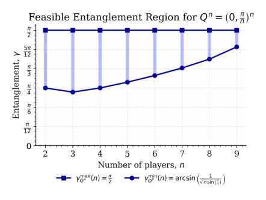
<figcaption class="paper-figure-caption"><b>Fig 1.</b> FIG. 1. Lower bound on the entanglement parameter γ as a function of the number of players n for the Qn =  0, π</figcaption>
</figure>
<figure class="paper-figure-card">
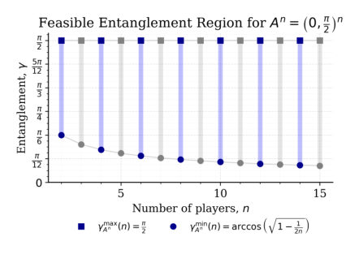
<figcaption class="paper-figure-caption"><b>Fig 2.</b> FIG. 2. Lower bound on the entanglement parameter γ as a function of the number of players n for the An =  0, π</figcaption>
</figure>
</div>

<p><strong>Summary.</strong> This paper generalizes the Quantum Volunteer's Dilemma by introducing a tunable entanglement parameter $\gamma$. It derives mathematical conditions proving that symmetric Nash equilibria can persist even when entanglement is reduced below its maximum value. This finding is crucial for understanding the practical feasibility of quantum enhancements in social decision-making on current, resource-constrained quantum devices.</p>
<p><strong>Why it may be interesting.</strong> It provides concrete, quantifiable thresholds ($\gamma_{\min}$) showing that quantum advantage in social dilemmas is robust and not solely dependent on maximal entanglement, which has direct implications for near-term, resource-limited quantum hardware.</p>
<details>
<summary>Detailed structure</summary>
<p><strong>Main problem.</strong> The study investigates how the existence and payoff of symmetric Nash equilibria in a quantum version of the Volunteer's Dilemma depend on the degree of initial entanglement ($\gamma$).</p>
<p><strong>Main result.</strong> Symmetric Nash equilibria can be sustained even when the entanglement is below its maximum value, provided $\gamma$ remains above a calculated threshold $\gamma_{	ext{threshold}}$ that depends on system size $n$.</p>
<p><strong>Method.</strong> The authors derived explicit mathematical conditions for equilibrium existence by analyzing payoff functions based on probability amplitudes derived from an entangled multi-qubit state.</p>
<p><strong>Model / system.</strong> The model is the Quantum Volunteer's Dilemma, formulated using the Eisert–Wilkens–Lewenstein framework acting on a shared entangled multi-qubit quantum state. Players manipulate qubits via unitaries to influence outcomes.</p>
<p><strong>Key observables.</strong> Expected payoff for each player ($i(	heta, \phi)$), and the required minimum entanglement parameter ($\gamma_{\min}$).</p>
<p><strong>Important parameters / regimes.</strong> Entanglement parameter ($\gamma$), number of players ($n$), and specific strategy profiles like $Q_n$ and $A_n$.</p>
<p><strong>Assumptions / limitations.</strong> The analysis focuses on two canonical symmetric strategy profiles ($Q_n$ and $A_n$) and assumes the system is governed by the EWL framework.</p>
<p><strong>Figures summary.</strong> Figure 1 illustrates the lower bound $\gamma_{\min}(n)$ for the $Q_n$ profile, while Figure 2 shows a similar bound for the $A_n$ profile, both demonstrating dependence on $n$.</p>
<p><strong>Paper structure.</strong> The paper first establishes the classical and quantum game setup. It then analyzes specific strategy profiles ($Q_n$ and $A_n$) to derive necessary conditions for Nash equilibrium in terms of $\gamma$, leading to explicit lower bounds on entanglement.</p>
</details>
<details>
<summary>Abstract</summary>
<p>A well-known model in game theory, the Volunteer's Dilemma describes a group of $n$ players who decide whether to volunteer for a collective benefit at a personal cost, or to abstain and risk forfeiting the benefit altogether. A quantum version of this dilemma, developed within the Eisert-Wilkens-Lewenstein framework, allows each player to manipulate one qubit of a shared entangled state, leading to symmetric Nash equilibria with higher expected payoffs than in the classical game. Existing analyses, however, assume maximal entanglement. Within the same framework, we introduce a generalized Quantum Volunteer's Dilemma with a tunable entanglement parameter $γ$ and study the extent to which equilibrium behavior depends on the level of entanglement. We derive explicit conditions relating $γ$, the number of players, and the players' strategies under which symmetric Nash equilibria exist, focusing on two canonical strategy profiles: one for $2\leq n\leq 9$, and one for even $n$. We find that maximal entanglement is not required to sustain symmetric equilibria. Instead, equilibrium behavior persists above a threshold value, which we compute analytically in both cases. We also demonstrate that the threshold value directly depends on system size. This characterization is directly relevant for implementations on resource-constrained quantum devices, where entanglement is inherently limited.</p>
</details>
<p><sub><a href="#top">↑ back to top</a></sub></p>

<p><a id="paper-2606.08361"></a></p>
<h3 id="a-century-of-coherent-states"><a href="http://arxiv.org/abs/2606.08361v1">A century of coherent states</a></h3>
<p><strong>Authors:</strong> Dusan Popov<br>
<strong>Type:</strong> theory · <strong>Category:</strong> other · <strong>PDF:</strong> <a href="https://arxiv.org/pdf/2606.08361v1">https://arxiv.org/pdf/2606.08361v1</a><br>
<strong>Analysis basis:</strong> full PDF text, analyzed in chunks
<strong>Topic relevance:</strong> <code>Keldysh / 2PI / non-Gaussian methods</code> <strong>1/5</strong> · <code>analog quantum simulation</code> <strong>1/5</strong> · <code>correlated / nonlocal dissipation</code> <strong>1/5</strong> · <code>driven-dissipative phase transition</code> <strong>1/5</strong> · <code>entanglement &amp; information structure</code> <strong>1/5</strong> · <code>methods for driven-dissipative</code> <strong>1/5</strong> · <code>non-equilibrium dynamics</code> <strong>1/5</strong></p>
<div class="figure-strip-hint">↔ Scroll figures horizontally</div>
<div class="paper-figures-scroll">
<figure class="paper-figure-card">
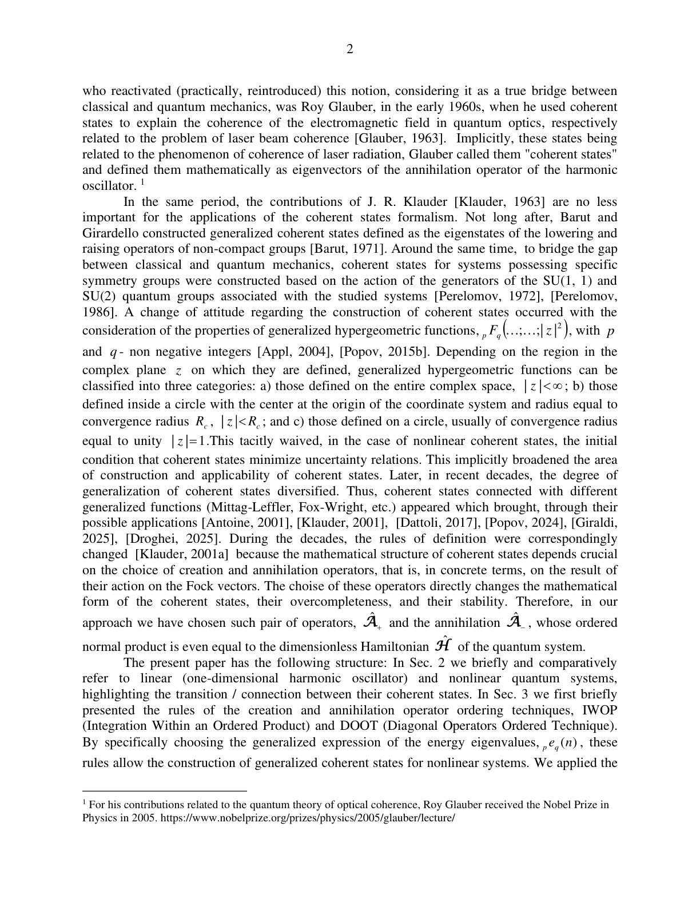
<figcaption class="paper-figure-caption"><b>Fig 1.</b> Low-resolution page preview, page 2</figcaption>
</figure>
<figure class="paper-figure-card">
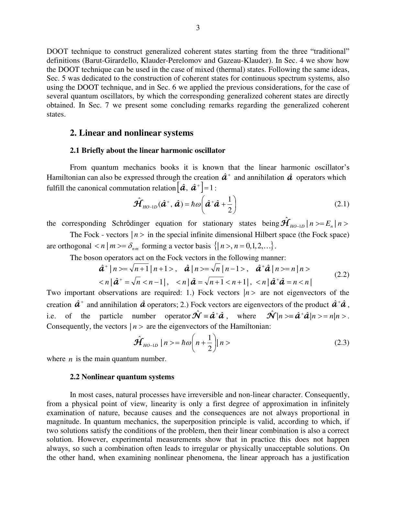
<figcaption class="paper-figure-caption"><b>Fig 2.</b> Low-resolution page preview, page 3</figcaption>
</figure>
<figure class="paper-figure-card">
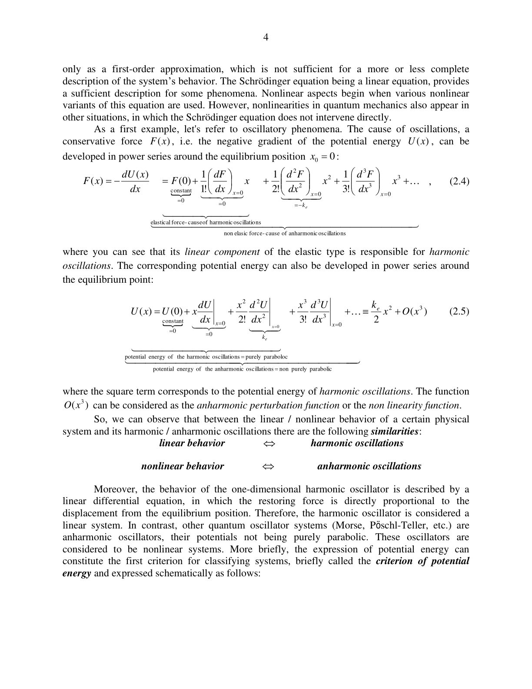
<figcaption class="paper-figure-caption"><b>Fig 3.</b> Low-resolution page preview, page 4</figcaption>
</figure>
<figure class="paper-figure-card">
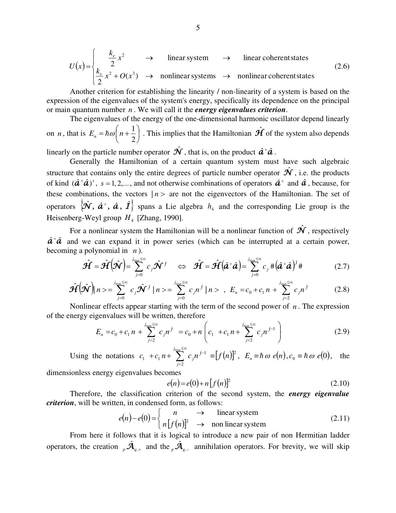
<figcaption class="paper-figure-caption"><b>Fig 4.</b> Low-resolution page preview, page 5</figcaption>
</figure>
<figure class="paper-figure-card">
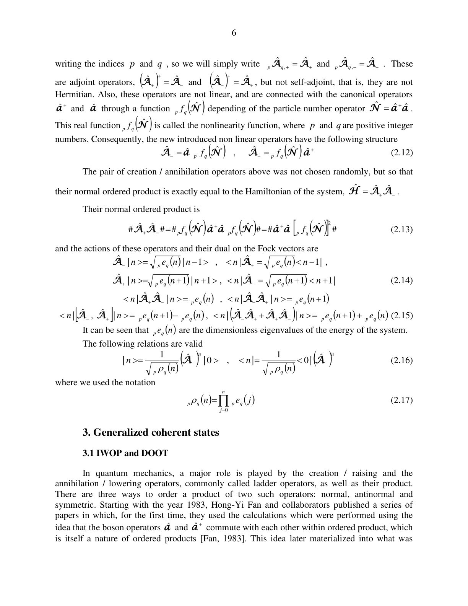
<figcaption class="paper-figure-caption"><b>Fig 5.</b> Low-resolution page preview, page 6</figcaption>
</figure>
</div>

<p><strong>Summary.</strong> This paper develops an advanced mathematical theory to construct generalized coherent states for anharmonic quantum oscillators. It introduces the Diagonal Operator Ordering Technique (DOOT) to systematically handle nonlinear Hamiltonians using special functions like hypergeometric and Fox-Wright functions. This framework allows physicists to analyze systems beyond simple harmonic motion, providing tools to characterize their quantum state properties.</p>
<p><strong>Why it may be interesting.</strong> This work is highly relevant for theoretical physicists working on open quantum systems or quantum optics because it provides a rigorous mathematical tool (DOOT) to define generalized coherent states for complex, anharmonic potentials where standard methods fail.</p>
<details>
<summary>Detailed structure</summary>
<p><strong>Main problem.</strong> The primary goal is to develop a systematic, generalized mathematical framework for constructing coherent states applicable to anharmonic quantum oscillators.</p>
<p><strong>Main result.</strong> Generalized coherent states can be constructed using the Diagonal Operator Ordering Technique (DOOT) applied to hypergeometric functions, providing an extension beyond standard harmonic oscillator definitions.</p>
<p><strong>Method.</strong> The paper employs advanced mathematical techniques including DOOT, analysis of energy eigenvalue spectra ($ ilde{e}_n$), and utilizing generalized special functions like the Fox-Wright function for normalization.</p>
<p><strong>Model / system.</strong> The focus is on quantum oscillators ranging from the simple harmonic oscillator (linear) to anharmonic systems like Morse or Pöschl-Teller potentials (nonlinear). The formalism extends to continuous spectra and thermal environments.</p>
<p><strong>Key observables.</strong> Mandel parameter ($\mathcal{M}$), expectation values of operator products, and generalized structure constants ($
ho_{np}^q$).</p>
<p><strong>Important parameters / regimes.</strong> The functional form of the dimensionless energy eigenvalues ($  ilde{e}_n$) dictates the specific mathematical structure of the resulting coherent state.</p>
<p><strong>Assumptions / limitations.</strong> It assumes that rules analogous to normal ordering (IWOP) can be systematically extended via DOOT to handle nonlinear Hamiltonians and operators.</p>
<p><strong>Figures summary.</strong> The notes detail numerous equations representing generalized hypergeometric functions, Meijer G-functions, and specific formulas for the Mandel parameter in various spectral regimes.</p>
<p><strong>Paper structure.</strong> The paper progresses by first establishing the necessity of generalization (comparing linear/nonlinear systems), then detailing the DOOT technique, deriving the general mathematical form using special functions (Fox-Wright/hypergeometric), and finally applying this framework to analyze moments and physical observables like photon statistics.</p>
</details>
<details>
<summary>Abstract</summary>
<p>During the century of existence of the notion of coherent states, either linear or nonlinear, several schemes for their construction, theoretical or experimental, have been developed. Generally, the mathematical structure of coherent states depends on the choice of ladder operators, and consequently on the structure constants. In this paper, we propose a way to construct generalized coherent states for anharmonic oscillators that is based on a diagonal operator ordering technique (DOOT) applied to generalized hypergeometric functions, that is, on some of the most general special functions. These states are generated by the action of a pair of ladder operators, the creation and the annihilation, whose ordered normal product is equal to the dimensionless Hamiltonian of the quantum system. In addition, the action of these operators is easy to find if the expression for the dimensionless energy eigenvalues is known.</p>
</details>
<p><sub><a href="#top">↑ back to top</a></sub></p>

<p><a id="paper-2606.08114"></a></p>
<h3 id="robust-applicability-of-continuous-dynamical-decoupling-to-decoherence-reduction-in-longitudinal-and-transverse-noise-settings-the-role-of-anisotropy"><a href="http://arxiv.org/abs/2606.08114v1">Robust applicability of continuous dynamical decoupling to decoherence reduction in longitudinal and transverse-noise settings: The role of anisotropy</a></h3>
<p><strong>Authors:</strong> S. Afonso, J. M. Gomez Llorente, J. Plata<br>
<strong>Type:</strong> theory · <strong>Category:</strong> other · <strong>PDF:</strong> <a href="https://arxiv.org/pdf/2606.08114v1">https://arxiv.org/pdf/2606.08114v1</a><br>
<strong>Analysis basis:</strong> full PDF text, analyzed in chunks
<strong>Topic relevance:</strong> <code>Keldysh / 2PI / non-Gaussian methods</code> <strong>1/5</strong> · <code>analog quantum simulation</code> <strong>1/5</strong> · <code>correlated / nonlocal dissipation</code> <strong>1/5</strong> · <code>driven-dissipative phase transition</code> <strong>1/5</strong> · <code>methods for driven-dissipative</code> <strong>1/5</strong> · <code>non-equilibrium dynamics</code> <strong>1/5</strong></p>
<div class="figure-strip-hint">↔ Scroll figures horizontally</div>
<div class="paper-figures-scroll">
<figure class="paper-figure-card">
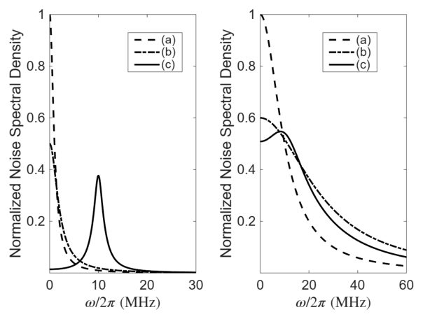
<figcaption class="paper-figure-caption"><b>Fig 1.</b> Figure 1. Spectral densities of the input fluctuations ηx(t) (a), and ηy(t) (b), and, of the effective noise term χa(t) (c). [Normalization to the maximum of S(ηx; ω) has been used]. In the left, the input fluctuations correspond to η2 x = 100 (a.u.), αηx/2π = 1 (MHz), η2 y = 100(a.u.), and αηy/2π = 2 (MHz). In the right, η2 x = 100 (a.u.), αηx/2π = 10 (MHz), η2 y = 150 (a.u.), and αηy/2π = 25 (MHz). In both, left and right figures, ωd/2π = 10 (MHz). The variances are expressed in arbitrary units (a.u.).</figcaption>
</figure>
<figure class="paper-figure-card">
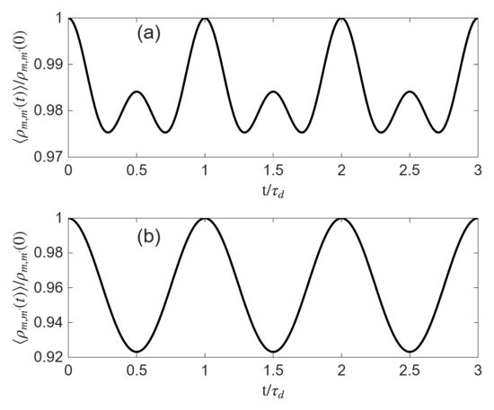
<figcaption class="paper-figure-caption"><b>Fig 2.</b> Figure 2. Dephasing resulting from anisotropic (a) and isotropic (b) static noisy inputs. (a) η2 x = 1, η2 y = 0.2, ωd = 5. (b) η2 x = η2 y = 1, ωd = 5. Arbitrary units are used for the variances and the frequency. We have taken |m −m′| = 1.</figcaption>
</figure>
<figure class="paper-figure-card">
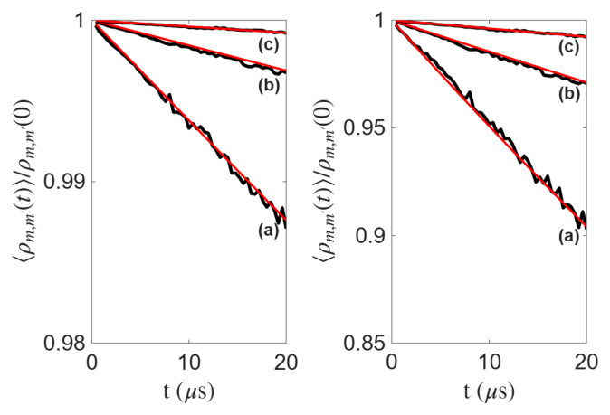
<figcaption class="paper-figure-caption"><b>Fig 3.</b> Figure 3. Results of the numerical simulation of the dephasing process (black lines) as compared with the predictions of the theoretical approach (red lines). In the left part, αηx = 1 (MHz), αηy = 0.5 (MHz); in the right part, αηx = 10 (MHz),</figcaption>
</figure>
<figure class="paper-figure-card">
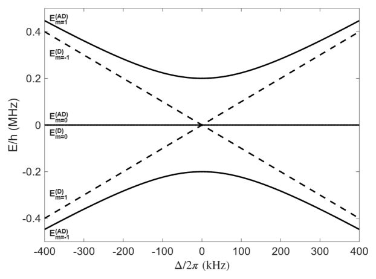
<figcaption class="paper-figure-caption"><b>Fig 4.</b> Figure 4. Bare energy levels (dashed lines) and dressed counterparts (continuous lines) of the three-level LZ model corresponding to the Hamiltonian in Eq. (11) with F = 1, Ωd/(2π) = 0.2 (MHz). For m = 0, the bare and the dressed energy levels are equal (horizontal line)</figcaption>
</figure>
<figure class="paper-figure-card">
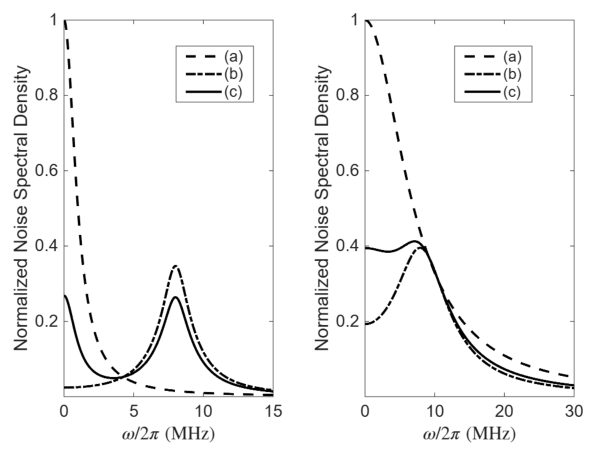
<figcaption class="paper-figure-caption"><b>Fig 5.</b> Figure 5. Spectral densities of the fluctuations δω0(t) (a), χa(t) (b), and χd(t) (c), normalized to the maximum of S(δω0; ω). In the left, the input fluctuations correspond to η2 x = 150 (a.u.), αηx/2π = 1 (MHz), η2 y = 250(a.u.), αηy/2π = 2 (MHz), δω2 0 = 200 (a.u.), and, αδω0 = 1 (MHz). In the right, η2 x = 150 (a.u.), αηx/2π = 4.5 (MHz), η2 y = 50 (a.u.), αηy/2π = 6 (MHz), δω2 0 = 200 (a.u.), and, αδω0 = 7 (MHz). In both, left and right figures, ωd/2π = 8 (MHz) and θ = π/3.</figcaption>
</figure>
</div>

<p><strong>Summary.</strong> This paper rigorously analyzes Continuous Dynamical Decoupling (CDD) efficiency against complex noise sources, extending theory beyond simple longitudinal noise to include transverse and anisotropic fluctuations. By transforming the system into a dressed-state basis, the authors show that CDD effectively suppresses decoherence by shifting the spectral density of noise away from critical transition frequencies.</p>
<p><strong>Why it may be interesting.</strong> This work provides a comprehensive theoretical toolkit for designing quantum control sequences that are resilient to realistic, multi-dimensional noise environments encountered in solid-state or atomic quantum memories.</p>
<details>
<summary>Detailed structure</summary>
<p><strong>Main problem.</strong> The study evaluates how effectively Continuous Dynamical Decoupling (CDD) can suppress decoherence in qubit systems subjected to complex noise, specifically generalizing beyond simple longitudinal fluctuations to include transverse and anisotropic noise components.</p>
<p><strong>Main result.</strong> CDD proves robust against generalized noise sources by transforming the effective noise spectral densities away from the system's fundamental transition frequencies. The efficiency is highly dependent on the driving field parameters ($\Omega_d, \omega_d$) and the nature of the noise correlations.</p>
<p><strong>Method.</strong> The analysis employs an analytical framework based on unitary transformations to map the noisy Hamiltonian into a dressed-state representation. This allows for calculating effective stochastic terms whose spectral characteristics determine decoherence rates.</p>
<p><strong>Model / system.</strong> The model is based on a qubit system, exemplified by a hyperfine Zeeman multiplet in $^{87}	ext{Rb}$. The dynamics are governed by a generalized Hamiltonian incorporating longitudinal frequency shifts ($\delta\omega_0(t)$) and transverse noise components ($\eta_x(t), \eta_y(t)$).</p>
<p><strong>Key observables.</strong> Decoherence time ($T_2$), coherence decay $\langle
ho_{m,m'}(t)
angle$, and population transfer probabilities $\langle P_{m,m'}(t)
angle$.</p>
<p><strong>Important parameters / regimes.</strong> Driving field amplitude ($\Omega_d$), driving frequency ($\omega_d$), noise correlation times ($    au_c$), and the anisotropy parameters of the noise.</p>
<p><strong>Assumptions / limitations.</strong> The analysis often relies on the Rotating Wave Approximation (RWA) ($\omega_d \gg \Omega_d$) and assumes Gaussian statistics for the fluctuations. Cross-correlations between different noise sources are sometimes neglected initially.</p>
<p><strong>Figures summary.</strong> Figures compare numerical simulations to theoretical predictions of dephasing processes under various noise conditions, illustrating how CDD mitigates decoherence by shifting effective spectral densities away from resonance frequencies.</p>
<p><strong>Paper structure.</strong> The paper progresses by first establishing the generalized Hamiltonian including transverse noise. It then uses unitary transformations to analyze the system in a dressed-state basis. Subsequent sections detail the decay of coherences (dephasing) and population transfer rates, analyzing different noise limits (white vs. static) and the role of anisotropy.</p>
</details>
<details>
<summary>Abstract</summary>
<p>We analytically evaluate the efficiency of continuous dynamical decoupling (CDD) to curb decoherence in generic qubit setups where diverse sources of noise can be present. Previous theoretical approaches to CDD have mainly focused on its potential to cope with longitudinal fluctuations. Here, the basic scenario tackled with CDD is generalized. Apart from dealing with pure dephasing induced by diagonal noise, we consider the impact of transverse fluctuations, usually present in the practical arrangements. In particular, the implications of anisotropic noisy inputs are studied. Additionally, we analyze the role of the fluctuations in the dressing of the qubit by the CDD field of control: since the driving field is usually switched on through linear ramps of its characteristic parameters, the associated dressing of the original states can be described in terms of noisy Landau-Zener transitions. In our approach, based on a sequence of unitary transformations, the noise entering the system is cast into effective stochastic terms whose spectral characteristics are dependent on the driving parameters. This description allows the design of strategies to mitigate the impact of the fluctuations using controlled changes in the effective-noise properties. Significant robustness of CDD against the generalization of the basic scenario can be achieved through an appropriate choice of the parameters of control.</p>
</details>
<p><sub><a href="#top">↑ back to top</a></sub></p>

<p><a id="paper-2606.09705"></a></p>
<h3 id="when-do-local-score-models-extrapolate-across-size-a-diagnostic-theory-and-benchmark"><a href="http://arxiv.org/abs/2606.09705v1">When Do Local Score Models Extrapolate Across Size? A Diagnostic Theory and Benchmark</a></h3>
<p><strong>Authors:</strong> Wenjie Xi<br>
<strong>Type:</strong> both · <strong>Category:</strong> statistical mechanics · <strong>PDF:</strong> <a href="https://arxiv.org/pdf/2606.09705v1">https://arxiv.org/pdf/2606.09705v1</a><br>
<strong>Analysis basis:</strong> full PDF text, analyzed in chunks
<strong>Topic relevance:</strong> <code>analog quantum simulation</code> <strong>1/5</strong> · <code>correlated / nonlocal dissipation</code> <strong>1/5</strong> · <code>driven-dissipative phase transition</code> <strong>1/5</strong> · <code>methods for driven-dissipative</code> <strong>1/5</strong> · <code>non-equilibrium dynamics</code> <strong>1/5</strong></p>
<div class="figure-strip-hint">↔ Scroll figures horizontally</div>
<div class="paper-figures-scroll">
<figure class="paper-figure-card">
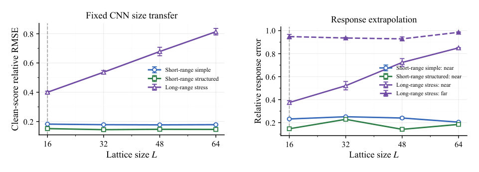
<figcaption class="paper-figure-caption"><b>Fig 1.</b> Figure 1: Fixed-architecture pure-CNN size extrapolation on the 2D FDLF benchmark, aggregated over three indepen- dent training seeds. Models use B = 1 residual block, hence Reff = 4, are trained only at L = 16, and are evaluated at larger sizes. Short-range simple and short-range structured teachers show stable score and near-response errors across L, while the long-range stress teacher has substantially larger error and degrades under the same protocol. Error bars are s.e.m. across training seeds.</figcaption>
</figure>
<figure class="paper-figure-card">
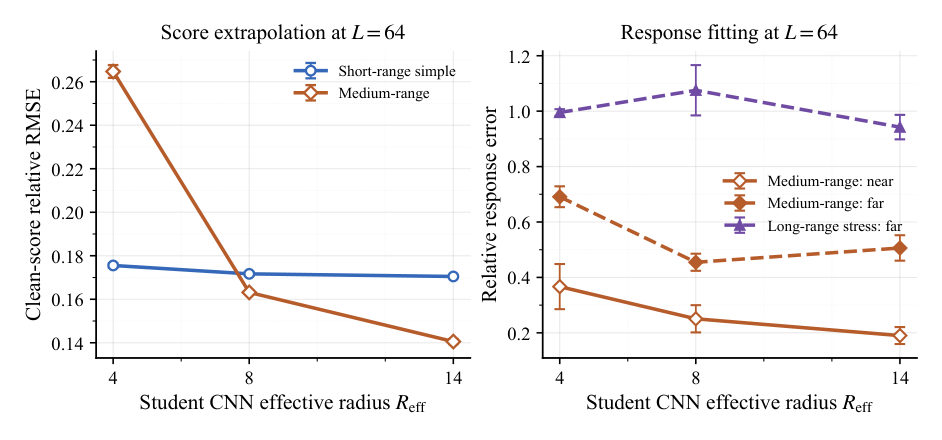
<figcaption class="paper-figure-caption"><b>Fig 2.</b> Figure 2: Pure-CNN receptive-field sweep on the 2D FDLF benchmark, aggregated over three independent training seeds. Models are trained at L = 32 and evaluated at L = 64. The x-axis is the effective CNN radius induced by the number of 3 × 3 convolutional residual blocks. Left: the short-range simple teacher is stable even at small radius, while the medium-range teacher improves substantially as the receptive field grows. Right: the same medium-range teacher shows decreasing near/far response error, whereas the long-range stress teacher retains high far-response error. Error bars are s.e.m. across training seeds.</figcaption>
</figure>
<figure class="paper-figure-card">
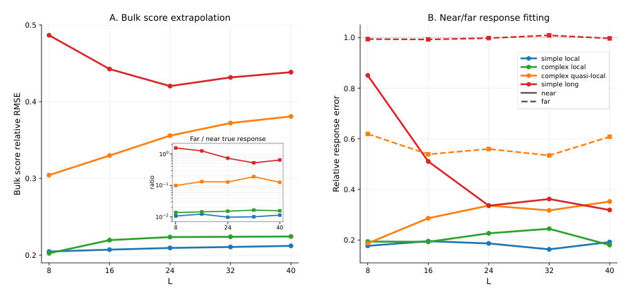
<figcaption class="paper-figure-caption"><b>Fig 3.</b> Figure 3: Hard-valid mixed discrete-continuous check. Models are trained at L = 8 and evaluated up to L = 40. Local teachers remain stable; teachers with larger far-field response have poorer or degrading score and response errors. The inset reports the teacher’s own far-to-near response ratio.</figcaption>
</figure>
<figure class="paper-figure-card">
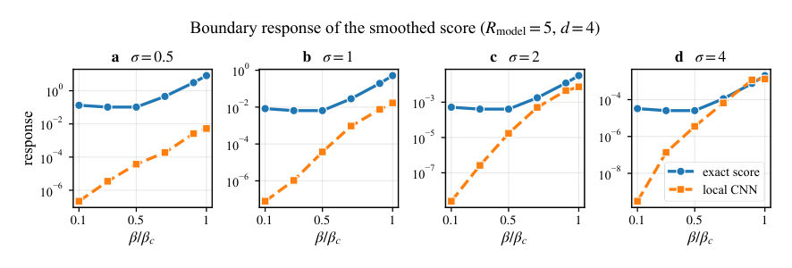
<figcaption class="paper-figure-caption"><b>Fig 4.</b> Figure 4: Boundary response of the smoothed score near the Ising critical point. A local CNN with radius R = 5 is evaluated at distance d = 4, inside its nominal receptive field. The exact response grows strongly as β/βc →1, and the learned response underestimates it, especially at intermediate noise scales.</figcaption>
</figure>
</div>

<p><strong>Summary.</strong> The paper rigorously diagnoses when local score models can generalize from small to large physical systems by focusing on the quasi-locality of the Gaussian-smoothed score. It introduces a novel benchmark (FDLF) and proves that stable extrapolation requires the model's receptive field to encompass the true, long-range response dictated by the underlying physics. This provides a crucial theoretical bridge between deep learning generalization theory and statistical mechanics.</p>
<p><strong>Why it may be interesting.</strong> This work provides a powerful, physics-informed diagnostic tool for assessing the generalization capabilities of deep learning models trained on physical systems, directly linking ML performance to fundamental statistical properties like spatial correlation decay.</p>
<details>
<summary>Detailed structure</summary>
<p><strong>Main problem.</strong> The central problem is determining the conditions under which local score models, trained on small systems, can reliably extrapolate their learned rules to much larger physical systems in generative modeling.</p>
<p><strong>Main result.</strong> Stable size extrapolation requires that the underlying Gaussian-smoothed score exhibits quasi-locality relative to the model's receptive field, not just architectural locality. Failure occurs when spatial mixing weakens or the true response range exceeds the model's capacity.</p>
<p><strong>Method.</strong> The authors develop theoretical theorems and introduce a white-box diagnostic benchmark called Finite-Depth Local Flow (FDLF) to systematically test score extrapolation across varying system sizes.</p>
<p><strong>Model / system.</strong> The framework uses generative models based on reverse diffusion processes applied to physical systems, tested using controlled lattices (e.g., 2D/3D cubic lattices) and benchmarked against known physics like the Ising model near criticality.</p>
<p><strong>Key observables.</strong> Clean-score relative RMSE ($   ext{RMSE}_{ ext{score}}(L)$), Response Tail $T_{L,\sigma}(i; R, x)$, and local marginal distributions ($d_{BL}$).</p>
<p><strong>Important parameters / regimes.</strong> System size ($L$), Receptive Field Size ($ ext{Reff}$), Noise level ($\sigma$), and the critical parameter $eta/eta_c$ for stress tests.</p>
<p><strong>Assumptions / limitations.</strong> The primary assumption is that stable extrapolation depends on the quasi-locality of the <em>smoothed</em> score, which must be covered by the model's receptive field. The theoretical bounds are explicitly local (fixed patches) and do not guarantee global convergence.</p>
<p><strong>Figures summary.</strong> Figures demonstrate that short-range interactions maintain low error across increasing system sizes ($L$), while long-range stress teachers show failure, confirming that coverage of the score's response range is critical for successful extrapolation.</p>
<p><strong>Paper structure.</strong> The paper builds from theoretical formalisms (quasi-locality theorems) to introducing a rigorous diagnostic benchmark (FDLF), and finally validates these concepts through structured experiments testing short-, medium-, and long-range correlation structures.</p>
</details>
<details>
<summary>Abstract</summary>
<p>Scientific generative modeling often requires size transfer, where models trained on small systems are evaluated on larger ones. While translation-invariant architectures enable this evaluation, we show that architectural locality alone does not guarantee stable size extrapolation. Instead, stable extrapolation is governed by the quasi-locality of the Gaussian-smoothed score. Through Tweedie's formula, far-away perturbations can influence local score components via posterior covariance, meaning a local model succeeds only if its receptive field covers the smoothed score's response range. We formalize this mechanism, proving a size-uniform comparison theorem for local marginals under reverse diffusion. We also introduce Finite-Depth Local Flow (FDLF), a white-box diagnostic benchmark with exact scores, densities, and controllable response ranges. Empirically, we validate the interplay between spatial mixing, smoothed-score quasi-locality, and model receptive fields. Under spatial mixing, the smoothed score remains quasi-local relative to the receptive field, enabling stable extrapolation. Conversely, when spatial mixing weakens, the score's locality rapidly degrades, causing size transfer to fail.</p>
</details>
<p><sub><a href="#top">↑ back to top</a></sub></p>

<p><a id="paper-2606.09594"></a></p>
<h3 id="constraint-residuals-graph-posteriors-and-determinant-corrected-full-space-targets-in-bayesian-inverse-problems"><a href="http://arxiv.org/abs/2606.09594v1">Constraint residuals, graph posteriors, and determinant-corrected full-space targets in Bayesian inverse problems</a></h3>
<p><strong>Authors:</strong> Jonathon Cottom, Emilia Olsson<br>
<strong>Type:</strong> theory · <strong>Category:</strong> numerical methods · <strong>PDF:</strong> <a href="https://arxiv.org/pdf/2606.09594v1">https://arxiv.org/pdf/2606.09594v1</a><br>
<strong>Analysis basis:</strong> full PDF text, analyzed in chunks
<strong>Topic relevance:</strong> <code>Keldysh / 2PI / non-Gaussian methods</code> <strong>1/5</strong> · <code>analog quantum simulation</code> <strong>1/5</strong> · <code>driven-dissipative phase transition</code> <strong>1/5</strong> · <code>methods for driven-dissipative</code> <strong>1/5</strong></p>
<div class="figure-strip-hint">↔ Scroll figures horizontally</div>
<div class="paper-figures-scroll">
<figure class="paper-figure-card">
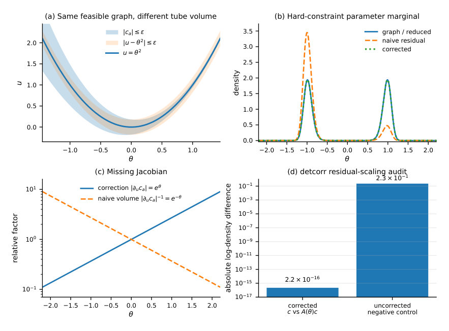
<figcaption class="paper-figure-caption"><b>Fig 1.</b> Figure 1: Analytic scalar example and software-level residual-scaling diagnostic. (a) Scaling ca = exp(θ)(u−θ2) leaves the graph unchanged but changes residual-tube volume. (b) The naive hard-constraint limit is reweighted by exp(−θ), while the corrected limit matches the graph posterior. (c) The missing residual-volume factor and compensating determinant correction. (d) The detcorr residual-scaling audit: corrected equivalent targets agree to roundoff because the state-Jacobian and weighted-residual volume corrections are both included, while the uncorrected negative control differs at O(10−1).</figcaption>
</figure>
<figure class="paper-figure-card">
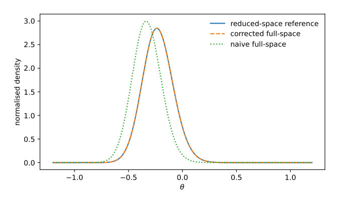
<figcaption class="paper-figure-caption"><b>Fig 2.</b> Figure 2: Section 6 validation-scale benchmark generated from the detcorr implementation. The corrected full-space finite-penalty marginal is visually indistinguishable from the reduced-space reference, as predicted by Theorem 1, while the naive full-space marginal is biased by the missing state-Jacobian volume factor.</figcaption>
</figure>
</div>

<p><strong>Summary.</strong> This work resolves a critical ambiguity in Bayesian inverse problems where state equations constrain parameters. It proves that simply minimizing the residual (a full-space penalty) does not yield the correct posterior measure; instead, a determinant correction involving the state Jacobian must be applied to correctly sample the reduced manifold.</p>
<p><strong>Why it may be interesting.</strong> While focused on statistical inference rather than quantum dynamics, the mathematical machinery of manifold constraints and Jacobian determinants is highly relevant when parameterizing complex physical systems derived from PDEs in quantum physics or condensed matter theory.</p>
<details>
<summary>Detailed structure</summary>
<p><strong>Main problem.</strong> The paper addresses the mathematical ambiguity when defining target measures for Bayesian inverse problems constrained by state equations, comparing naive full-space penalty methods against reduced-space formulations.</p>
<p><strong>Main result.</strong> A determinant correction factor, involving the state Jacobian determinant, must be applied to the standard residual penalty to ensure that the limit of the penalized sampler correctly targets the graph-lifted reduced posterior measure.</p>
<p><strong>Method.</strong> The authors use theoretical analysis comparing different limiting distributions derived from penalizing residuals in the full parameter-state space versus projecting onto the constraint manifold. They derive and implement determinant corrections for these penalties.</p>
<p><strong>Model / system.</strong> The context is general PDE-constrained Bayesian inverse problems, modeled by a state equation $c(	heta, u) = 0$, where $ heta$ are unknown parameters (e.g., conductivity coefficients) and $u$ is the resulting state variable. The analysis relies on finite-dimensional discretizations of these systems.</p>
<p><strong>Key observables.</strong> The primary observables are the posterior probability density functions ($\pi_{	ext{red}}$, $\pi_{\Gamma}$, $\pi_{
ho}$), and the convergence of sampling diagnostics like effective sample size and $\hat{R}$.</p>
<p><strong>Important parameters / regimes.</strong> The key parameters include the unknown coefficients $   heta$, the state variable $u$, the penalty strength $
ho  o \infty$, and the state Jacobian determinant $|\det D_{uc}|$.</p>
<p><strong>Assumptions / limitations.</strong> Assumptions require that the state equation has a unique solution $u=G(	heta)$ with a nonsingular state Jacobian, and the results are stated for finite-dimensional discretizations.</p>
<p><strong>Figures summary.</strong> Figures compare residual tube volume changes, hard-constraint marginals, the effect of missing Jacobian correction, and the result using the determinant-corrected audit.</p>
<p><strong>Paper structure.</strong> The paper establishes the problem by contrasting reduced vs. full-space sampling; it then derives the necessary determinant corrections for various penalty types (unweighted, weighted); finally, it presents these corrected targets as mathematically rigorous alternatives to naive residual minimization.</p>
</details>
<details>
<summary>Abstract</summary>
<p>Bayesian inverse problems constrained by state equations are often sampled in a full parameter-state space by penalising the residual, rather than in a reduced space where the state is eliminated. We show that these formulations are not automatically equivalent as posterior measures. For finite-dimensional discretisations of equality-constrained inverse problems, assume the state equation \(c(θ,u)=0\) has a unique solution \(u=G(θ)\) and nonsingular state Jacobian \(\D_u c\). The reduced posterior, its graph lift, and the zero-noise residual posterior are then distinct. A local change of variables shows that an uncorrected Gaussian residual penalty converges, after marginalisation over \(u\), to the reduced density multiplied by \(\abs{\det \D_u c(θ,G(θ))}^{-1}\). Thus algebraically equivalent residuals can define the same feasible set but different limiting posteriors. We derive determinant corrections for unweighted, weighted, and rescaled residual penalties that have the graph-lifted reduced posterior as their hard-constraint limit. The result separates feasibility from posterior calibration: driving the residual to zero is not sufficient for exact sampling of the graph-lifted reduced posterior unless the sampling or correction step targets the corresponding corrected density.</p>
</details>
<p><sub><a href="#top">↑ back to top</a></sub></p>

<p><a id="paper-2606.08845"></a></p>
<h3 id="energy-efficient-satellite-wake-up-via-bosonic-identification-the-role-of-synchronization"><a href="http://arxiv.org/abs/2606.08845v1">Energy-Efficient Satellite Wake-Up via Bosonic Identification: The Role of Synchronization</a></h3>
<p><strong>Authors:</strong> Gökhan Elmas, Janis Nötzel<br>
<strong>Type:</strong> theory · <strong>Category:</strong> quantum information and computing · <strong>PDF:</strong> <a href="https://arxiv.org/pdf/2606.08845v1">https://arxiv.org/pdf/2606.08845v1</a><br>
<strong>Analysis basis:</strong> full PDF text, analyzed in chunks
<strong>Topic relevance:</strong> <code>correlated / nonlocal dissipation</code> <strong>1/5</strong> · <code>driven-dissipative phase transition</code> <strong>1/5</strong> · <code>entanglement &amp; information structure</code> <strong>1/5</strong> · <code>interference shaping light</code> <strong>1/5</strong></p>
<div class="figure-strip-hint">↔ Scroll figures horizontally</div>
<div class="paper-figures-scroll">
<figure class="paper-figure-card">
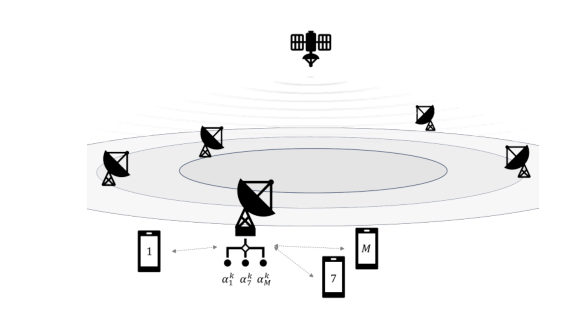
<figcaption class="paper-figure-caption"><b>Fig 1.</b> Fig. 1. Depicted is the situation with one satellite, roughly centered in the middle, and several GS with attached UEs. The GS set their receivers to detect if one of the signatures corresponding to a UE that is attached to them is transmitted by the satellite. A GS needs to track e.g. the satellite position in order to know the transmittivity, which is required for operation of the receiver as described in Sec. IV-B.</figcaption>
</figure>
<figure class="paper-figure-card">
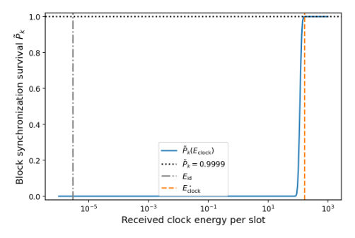
<figcaption class="paper-figure-caption"><b>Fig 2.</b> Fig. 2. Exact block synchronization survival probability ˜Pk as a function of the received clock energy. The identification operating point Eid yields negligible survival probability, while reliable synchronization requires a sig- nificantly larger clock energy E⋆ clock.</figcaption>
</figure>
<figure class="paper-figure-card">
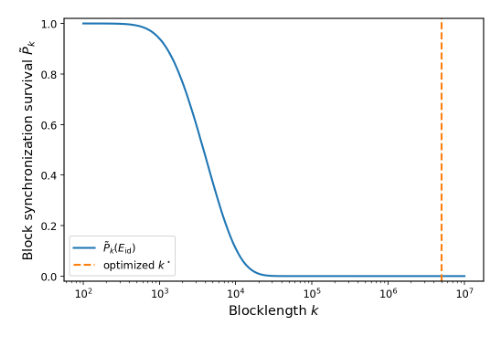
<figcaption class="paper-figure-caption"><b>Fig 3.</b> Fig. 4. Block synchronization survival probability ˜Pk as a function of the blocklength k at fixed identification energy Eid. The exponential decay with increasing k explains the failure of synchronization at the identification- optimal blocklength.</figcaption>
</figure>
<figure class="paper-figure-card">
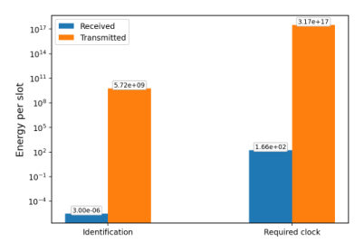
<figcaption class="paper-figure-caption"><b>Fig 4.</b> Fig. 3. Comparison of identification and required synchronization energies for the reference scenario. For each operating point, both received and transmitted energies per slot are shown. Synchronization requires several orders of magnitude more energy than identification.</figcaption>
</figure>
<figure class="paper-figure-card">
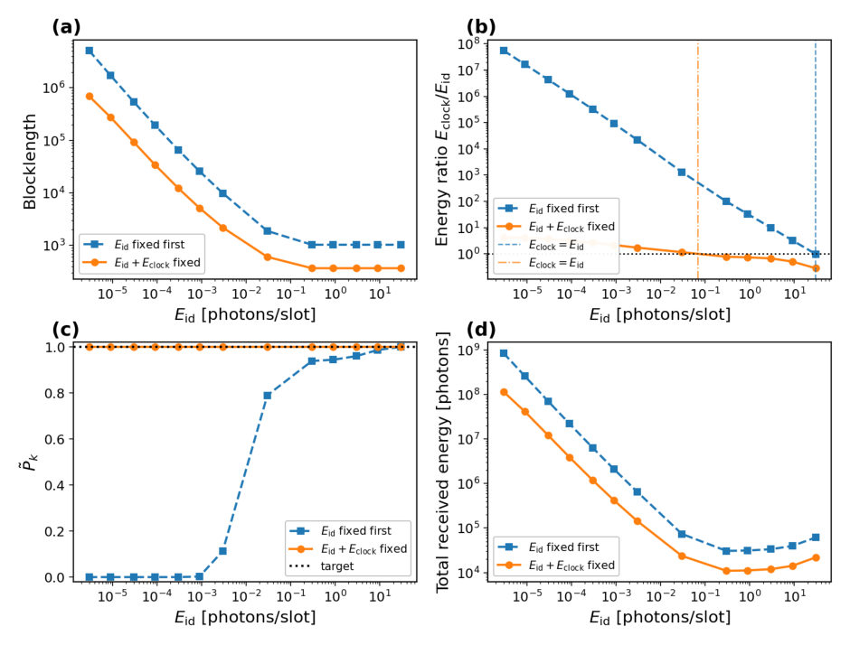
<figcaption class="paper-figure-caption"><b>Fig 5.</b> Fig. 5. Identification-synchronization tradeoff as a function of the received identification energy Eid. Blue curves correspond to identification parameters optimized independently of synchronization; orange curves correspond to operation under a shared per-slot energy constraint. (a) Optimized blocklength. (b) Energy ratio Eclock/Eid, with vertical markers indicating Eclock = Eid. (c) Synchronization survival probability. (d) Total received energy.</figcaption>
</figure>
</div>

<p><strong>Summary.</strong> This work analyzes deterministic identification in satellite wake-up systems constrained by energy. It reveals a critical conflict where reliable synchronization fails exponentially as the required signal blocklength increases. The authors propose that jointly optimizing for both tasks under a shared energy budget can mitigate this severe energy imbalance.</p>
<p><strong>Why it may be interesting.</strong> The analysis provides quantitative bounds on the feasibility of quantum communication protocols in realistic, low-energy environments by explicitly modeling resource constraints (energy) against information-theoretic goals (identification).</p>
<details>
<summary>Detailed structure</summary>
<p><strong>Main problem.</strong> The paper investigates the fundamental trade-off between achieving reliable signal identification and maintaining accurate clock synchronization in low-energy satellite wake-up communication systems.</p>
<p><strong>Main result.</strong> There is a strong, fundamental asymmetry: while identification performance improves with blocklength, the required synchronization accuracy degrades exponentially with that same blocklength, leading to significant energy imbalances.</p>
<p><strong>Method.</strong> The analysis uses Markov chain modeling for clock drift and spectral decomposition of Toeplitz matrices to calculate the synchronization survival probability ($    ilde{P}_k$).</p>
<p><strong>Model / system.</strong> The system models a satellite broadcasting signals using phase-encoded coherent states to multiple Ground Stations (GS) attempting to wake up attached User Equipments (UEs). Synchronization is modeled as a discrete-time stochastic process.</p>
<p><strong>Key observables.</strong> Identification performance vs. blocklength, synchronization survival probability ($    ilde{P}_k$), and the required energy for clock transmission versus identification signal transmission.</p>
<p><strong>Important parameters / regimes.</strong> Blocklength ($k$), received energy levels ($E_{id}, E_{	ext{clock}}$), and the exponential decay rate governing $   ilde{P}_k$.</p>
<p><strong>Assumptions / limitations.</strong> The synchronization dynamics are modeled by a nearest-neighbor Markov chain, and the analysis assumes perfect correction if a deviation is detected.</p>
<p><strong>Figures summary.</strong> Figures illustrate the sharp threshold behavior of synchronization survival probability ($ ilde{P}_k$) versus clock energy, and compare the vastly different energy requirements for identification versus synchronization under independent vs. shared energy constraints.</p>
<p><strong>Paper structure.</strong> The paper progresses by first establishing the Markovian model for synchronization failure, deriving the exponential decay rate $  ilde{P}_k \sim 2^{-kI(a,T)}$, and then comparing optimization strategies: independent (leading to large energy gaps) versus joint optimization under a shared total energy budget.</p>
</details>
<details>
<summary>Abstract</summary>
<p>The information-theoretic concept of identification describes a sender-receiver architecture in which the receiver only checks whether a particular message was sent or not, thereby promising a low-energy receiver design. In low received-energy regimes, quantum receivers are a promising tool for studying the system limits. However, the known information-theoretically optimal identification codes typically assume perfect synchronization. In this work, we study deterministic identification in a satellite setting under explicit synchronization constraints, where a satellite broadcasts the signature of a specific User Equipment (UE) which it assumes to be attached to one out of several possible Ground Station (GS), with the goal of establishing communication with the target UE. Within the proposed design, and assuming a specific phase-encoded coherent-state clock scheme in which the discrete time index is represented by equidistant phase rotations on the unit circle, our results reveal a fundamental asymmetry: At any transmission power, identification performance improves with blocklength, whereas synchronization accuracy degrades. In particular, the energy needed for transmitting the satellite clock to the GS can be several orders of magnitude higher than the one needed for the identification signal. This indicates that synchronization strongly impacts identification performance and motivates the investigation of the error-correcting capabilities of bosonic codes under jitter.</p>
</details>
<p><sub><a href="#top">↑ back to top</a></sub></p>

<p><a id="paper-2606.08704"></a></p>
<h3 id="regularised-arbitrary-gauge-non-relativistic-qed"><a href="http://arxiv.org/abs/2606.08704v1">Regularised Arbitrary Gauge non-Relativistic QED</a></h3>
<p><strong>Authors:</strong> Alex Chivers-White, Adam Stokes<br>
<strong>Type:</strong> theory · <strong>Category:</strong> other · <strong>PDF:</strong> <a href="https://arxiv.org/pdf/2606.08704v1">https://arxiv.org/pdf/2606.08704v1</a><br>
<strong>Analysis basis:</strong> full PDF text, analyzed in chunks
<strong>Topic relevance:</strong> <code>Keldysh / 2PI / non-Gaussian methods</code> <strong>1/5</strong> · <code>analog quantum simulation</code> <strong>1/5</strong> · <code>correlated / nonlocal dissipation</code> <strong>1/5</strong> · <code>driven-dissipative phase transition</code> <strong>1/5</strong></p>
<div class="figure-strip-hint">↔ Scroll figures horizontally</div>
<div class="paper-figures-scroll">
<figure class="paper-figure-card">
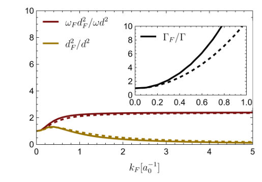
<figcaption class="paper-figure-caption"><b>Fig 1.</b> FIG. 2: Main: d2 F /d2 (dark yellow), ωF d2 F /ωd2 (dark red), against kF ; d and ω denote the 2p →1s transition dipole moment and transition frequency respectively, while dF and ωF denote their kF -dependent counterparts obtained when δUMF is included within Hm. Dashed lines are obtained from the dipole approximation of δ ˜UMφ and solid lines from the unapproximated δUMF . A maximum value of d2 0.36/d2 ≈1.32 is followed by a linear decline as confinement increases with kF . This is compensated by a corresponding growth in ωF . Inset: Eq. (60) as a function of kF , shown in units of the bare rate. Significant deviation of ΓF /Γ from unity is seen even for relatively modest cut-off values,...</figcaption>
</figure>
<figure class="paper-figure-card">
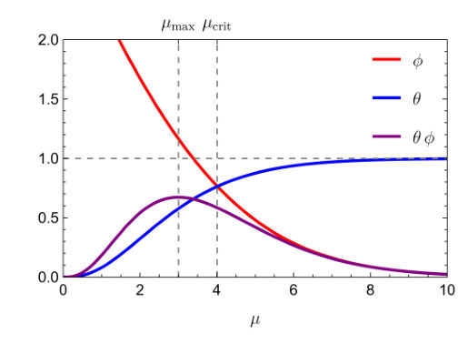
<figcaption class="paper-figure-caption"><b>Fig 2.</b> FIG. 3: The ratios ϕ (red), θ (blue), and θϕ = 1</figcaption>
</figure>
<figure class="paper-figure-card">
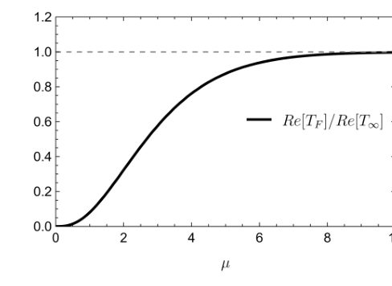
<figcaption class="paper-figure-caption"><b>Fig 3.</b> FIG. 4: The ratio of the regularised transition element to the point-charge (kF →∞) transition element against µ. η = kF /keg is held fixed at η ≡100. For a kF ∼a−1 0 we have agreement with the point-case when R ∼10[a0], whereas for kF ∼λ−1 C we have Re[T]F ]/Re[T∞] ≈1 for all meaningful R.</figcaption>
</figure>
</div>

<p><strong>Summary.</strong> The paper develops a rigorous, regularized framework for non-relativistic Quantum Electrodynamics by analyzing how different gauge choices affect the description of light-matter coupling. It shows that while the underlying physics must be gauge invariant, practical calculations involving cutoffs reveal significant discrepancies between simple approximations (like the dipole approximation) and more complete multipolar treatments.</p>
<p><strong>Why it may be interesting.</strong> This work is highly relevant to AMO physics as it tackles fundamental issues of gauge dependence and regularization in light-matter interaction theory, which are crucial for accurate calculations in cavity QED or atom-surface interactions.</p>
<details>
<summary>Detailed structure</summary>
<p><strong>Main problem.</strong> The primary goal is developing a regularised, gauge-independent formulation for non-relativistic Quantum Electrodynamics (nrQED) to correctly describe light-matter interactions.</p>
<p><strong>Main result.</strong> The theory demonstrates that while different gauges yield mathematically equivalent physical content (S-matrix), the choice of regularization cut-off significantly impacts calculated observables like transition rates and Lamb shifts, especially when comparing dipole vs. multipolar descriptions.</p>
<p><strong>Method.</strong> The authors employ canonical quantization procedures in an arbitrary gauge, utilizing smearing functions (form factors) to regularize point charges and compare results derived from Coulomb versus multipolar gauges.</p>
<p><strong>Model / system.</strong> The model is non-relativistic QED describing the interaction between charged matter systems (like atoms/dipoles) and the electromagnetic field. The Hamiltonian is constructed in an arbitrary gauge $H_g$, which is then analyzed via canonical commutation relations and perturbation theory.</p>
<p><strong>Key observables.</strong> Spontaneous emission rates ($\Gamma$), Lamb shift ($\Delta \epsilon_{2s}$), direct inter-atomic interaction ratios ($    heta, \phi$).</p>
<p><strong>Important parameters / regimes.</strong> Momentum cut-offs ($k_\varphi, k_\ell$), separation distance $R$, and the dimensionless parameter $\mu = k_F R$.</p>
<p><strong>Assumptions / limitations.</strong> The analysis relies on Dirac's constrained quantization procedure and makes approximations concerning which high-momentum modes are negligible (e.g., in the Electric Dipole Approximation).</p>
<p><strong>Figures summary.</strong> Figures compare ratios of interaction strengths ($\phi, 	heta$) versus $\mu = k_F R$, showing deviations from unity when regularization is incomplete; another figure compares energy transfer rates relative to infinite-cutoff limits.</p>
<p><strong>Paper structure.</strong> The paper progresses by first establishing the gauge-invariant Hamiltonian structure (Chunk 1 &amp; 2), then comparing predictions for atomic transitions and Lamb shifts using different gauges and cutoffs (Chunk 3), before analyzing direct interatomic interactions and energy transfer rates in the multipolar regime (Chunk 4 &amp; 5).</p>
</details>
<details>
<summary>Abstract</summary>
<p>We develop a regularised arbitrary-gauge formulation of nonrelativistic quantum electrodynamics and use it to compare Coulomb and multipolar descriptions with a Lorentzian form factor. We analyse the effect of regularisation in perturbation theory, including alternative partitions of the Hamiltonian into free and interaction parts, and the limits of the electric dipole approximation. The regularised multipolar gauge exhibits a cut-off-dependent trade-off between the strength of individual interaction terms and the localisation of material subsystems that suppresses direct inter-atomic interactions. We discuss the implications of the framework for short-range phenomena, including Dicke criticality.</p>
</details>
<p><sub><a href="#top">↑ back to top</a></sub></p>

<p><a id="paper-2606.09773"></a></p>
<h3 id="from-pauli-strings-to-quantum-dynamics-a-unified-characterization"><a href="http://arxiv.org/abs/2606.09773v1">From Pauli Strings to Quantum Dynamics: A Unified Characterization</a></h3>
<p><strong>Authors:</strong> Roberto Gargiulo, Paul Herringer, Robert Zeier<br>
<strong>Type:</strong> theory · <strong>Category:</strong> quantum information and computing · <strong>PDF:</strong> <a href="https://arxiv.org/pdf/2606.09773v1">https://arxiv.org/pdf/2606.09773v1</a><br>
<strong>Analysis basis:</strong> full PDF text, analyzed in chunks
<strong>Topic relevance:</strong> <code>analog quantum simulation</code> <strong>1/5</strong> · <code>entanglement &amp; information structure</code> <strong>1/5</strong> · <code>non-equilibrium dynamics</code> <strong>1/5</strong></p>
<div class="figure-strip-hint">↔ Scroll figures horizontally</div>
<div class="paper-figures-scroll">
<figure class="paper-figure-card">
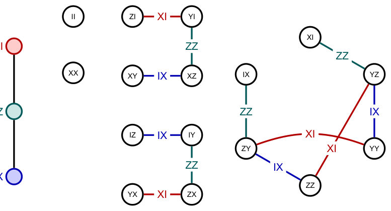
<figcaption class="paper-figure-caption"><b>Fig 1.</b> FIG. 1. The graph-theoretic formalism. Example of (a) frustration graph and (b) commutator graph over two qubits, for the generating set G = {IX, XI, ZZ}.</figcaption>
</figure>
<figure class="paper-figure-card">

<figcaption class="paper-figure-caption"><b>Fig 2.</b> FIG. 2. Up to isomorphism, the partition of the system in three parts due to symmetries: m logical qubits, r phase qubits, ℓ uncontrollable qubits. Also, in orange, the three possible choices of reference invariant bilinear form, B = I, Ym, Xm+1. These invariant properties completely determine the quasi-universal cases.</figcaption>
</figure>
<figure class="paper-figure-card">

<figcaption class="paper-figure-caption"><b>Fig 3.</b> FIG. 4. (a) Local Commutant of the Ising model/multi-angle QAOA and its directed graph Dcomm({XI, IX, ZZ}). (b) Lo- cal Invariant Bilinear Forms of the Ising model/multi-angle QAOA and its directed graph Dbil({XI, IX, ZZ}). There is a directed edge A →B whenever A and B locally match, i.e., they are of the form A = A1A2 and B = B1B2 with A2 = B1.</figcaption>
</figure>
<figure class="paper-figure-card">

<figcaption class="paper-figure-caption"><b>Fig 4.</b> FIG. 3. Example of swap-symmetric 2-local ansatz on some connected graph H, with vertex operators Cu and edge oper- ators AuBv or AuAv.</figcaption>
</figure>
<figure class="paper-figure-card">

<figcaption class="paper-figure-caption"><b>Fig 5.</b> FIG. 5. H is the interaction graph of a qubit system which interacts via an Ising interaction and subject to local transversal fields, as in the multi-angle QAOA setting. The terms Xu live on the vertices and ZuZv on the edges of H. Its frustration graph is the subdivision graph of the interaction graph.</figcaption>
</figure>
</div>

<p><strong>Summary.</strong> This paper develops an invariant-based mathematical framework to characterize the dynamics generated by Pauli strings in quantum systems. By connecting Pauli Lie algebras to transvection groups using symplectic properties, it provides efficient algorithms to determine system symmetries and computational reachability. This unified approach is vital for analyzing structured quantum circuits used in variational algorithms and many-body physics.</p>
<p><strong>Why it may be interesting.</strong> It provides a powerful algebraic toolkit (invariant-based classification) to analyze the computational power of quantum circuits defined by local interactions, which is crucial for understanding resource limitations in quantum computation.</p>
<details>
<summary>Detailed structure</summary>
<p><strong>Main problem.</strong> The core problem is understanding the dynamical properties, reachability, and computational power of quantum systems generated by sets of Pauli strings.</p>
<p><strong>Main result.</strong> The authors establish a unified, invariant-based framework connecting Pauli Lie algebras to subgroups of the Clifford group via symplectic properties, allowing for efficient classification algorithms.</p>
<p><strong>Method.</strong> The methodology heavily relies on representation theory, Lie theory, and graph theory (specifically using frustration and commutator graphs) to analyze algebraic structures over $\mathbb{F}_2$.</p>
<p><strong>Model / system.</strong> The focus is on quantum dynamics generated by Pauli strings ($\{I, X, Y, Z\}^{\otimes n}$), which models restricted quantum computation, variational algorithms, and certain many-body interactions.</p>
<p><strong>Key observables.</strong> Pauli orbits, invariant subspaces, the structure of the associated Lie algebra, and whether the generators provide 3-designs for the Pauli Lie group.</p>
<p><strong>Important parameters / regimes.</strong> The system size $n$ (number of qubits) and the specific generating set of Paulis are key parameters determining the complexity and structure.</p>
<p><strong>Assumptions / limitations.</strong> The analysis is restricted to the setting where generators are Pauli strings, which simplifies the problem from general quantum dynamics to one solvable with polynomial-time algorithms based on invariants.</p>
<p><strong>Figures summary.</strong> Figures illustrate graph formalisms, specifically comparing frustration graphs and commutator graphs for a given generating set of Paulis.</p>
<p><strong>Paper structure.</strong> The paper is highly structured across multiple parts, moving from an overview to detailed framework development using Pauli strings, invariant theory, Clifford groups, and finally illustrating applications in VQAs and many-body systems.</p>
</details>
<details>
<summary>Abstract</summary>
<p>Understanding the dynamical properties of quantum systems is an essential task in quantum computing, quantum control, and many-body physics. Tools such as representation theory and Lie theory provide crucial information on reachability and computational power. However, this information can be difficult to access exactly or compute efficiently for arbitrary generating sets. Here we focus on the setting of Pauli strings, which satisfy numerous exceptional properties that simplify the problem. We find deep connections between Pauli Lie algebras and certain subgroups of the Clifford group generated by transvections, through the symplectic properties of the Pauli strings. This allows us to give an invariant-based perspective on these objects and their reachability, in the language of Pauli orbits, symmetries, and invariant subspaces. The invariant-based approach provides efficient algorithms for identifying Lie algebras and orbits, as well as a simple framework for analyzing structured Pauli generating sets. We also show in an elementary way that Clifford subgroups generated by transvections provide 3-designs for the corresponding Pauli Lie groups. We illustrate the framework through structured examples from variational quantum algorithms, restricted quantum computation, many-body systems, and random circuits.</p>
</details>
<p><sub><a href="#top">↑ back to top</a></sub></p>

<p><a id="paper-2606.08690"></a></p>
<h3 id="high-precision-qubit-efficient-variational-continuous-optimization-via-amplitude-estimation"><a href="http://arxiv.org/abs/2606.08690v1">High Precision Qubit-Efficient Variational Continuous Optimization via Amplitude Estimation</a></h3>
<p><strong>Authors:</strong> Parth Danve<br>
<strong>Type:</strong> theory · <strong>Category:</strong> quantum information and computing · <strong>PDF:</strong> <a href="https://arxiv.org/pdf/2606.08690v1">https://arxiv.org/pdf/2606.08690v1</a><br>
<strong>Analysis basis:</strong> full PDF text, analyzed in chunks
<strong>Topic relevance:</strong> <code>analog quantum simulation</code> <strong>1/5</strong> · <code>methods for driven-dissipative</code> <strong>1/5</strong> · <code>quantum measurements</code> <strong>1/5</strong></p>
<div class="figure-strip-hint">↔ Scroll figures horizontally</div>
<div class="paper-figures-scroll">
<figure class="paper-figure-card">

<figcaption class="paper-figure-caption"><b>Fig 1.</b> Fig. 1. Standard discretized variational circuit for n continuous decision variables. Each variable xi is encoded into a dedicated register of bi qubits as in (1), and a joint variational ansatz V (ϕ) acts across all registers. Measurement bitstrings are decoded via (2) and passed to a classical optimizer which updates ϕ iteratively. Total qubit count grows as Pn i=1 bi, increasing logarithmically with the required precision 1/ηi per variable.</figcaption>
</figure>
<figure class="paper-figure-card">

<figcaption class="paper-figure-caption"><b>Fig 2.</b> Fig. 2. Proposed amplitude-based variational circuit for n continuous decision variables. Each variable xi is encoded into the measurement probability pi of a single qubit as in (3). The readout block estimates pi; the choice of readout procedure and its precision scaling are discussed in Section IV. Estimated probabilities ˆpi ≈pi are decoded classically using a decoding map as xi = g(ˆpi) and passed to a classical optimizer which updates ϕ iteratively.</figcaption>
</figure>
<figure class="paper-figure-card">

<figcaption class="paper-figure-caption"><b>Fig 3.</b> Fig. 3. IQAE circuit for qubit i in round k. The oracle Ai = V (ϕ)|i prepares |ψi(ϕ)⟩, followed by mk applications of Qi from (6). Measurement outcomes update the confidence interval for pi = sin2(θi).</figcaption>
</figure>
</div>

<p><strong>Summary.</strong> This paper presents a novel variational framework for continuous optimization on standard quantum hardware by encoding variables into single-qubit measurement amplitudes rather than using binary discretization. By employing iterative Quantum Amplitude Estimation (IQAE) for readout, the method achieves superior resource scaling—linear in qubits and quadratically better in circuit depth compared to discretized approaches—thereby enabling high-precision computation without prohibitive hardware overheads.</p>
<p><strong>Why it may be interesting.</strong> While focused on quantum computation theory, the efficiency gains in scaling resources ($\Theta(n)$ qubits vs. $\Theta(n \log(\dots))$) are crucial for any physical implementation, including those involving complex Hamiltonian simulation or optimization routines relevant to AMO physics.</p>
<details>
<summary>Detailed structure</summary>
<p><strong>Main problem.</strong> The challenge of performing continuous optimization on standard gate-based quantum computers without resorting to resource-intensive discretization.</p>
<p><strong>Main result.</strong> The proposed amplitude-based framework achieves a qubit cost scaling linearly with the number of variables ($\Theta(n)$) while improving readout complexity from quadratic ($O(\epsilon^{-2})$) to linear ($O(\epsilon^{-1})$) in estimation error, outperforming discretized methods significantly.</p>
<p><strong>Method.</strong> It encodes each continuous variable into the measurement probability (squared amplitude) of a single qubit and uses iterative Quantum Amplitude Estimation (IQAE) for high-precision readout, bypassing explicit binary encoding.</p>
<p><strong>Model / system.</strong> The work is situated within the standard gate-based quantum circuit model, applying variational algorithms to minimize objective functions $f(\mathbf{x})$ defined over real variables $\mathbf{x} \in \mathbb{R}^n$.</p>
<p><strong>Key observables.</strong> Objective function value error ($\delta_F$), variable precision ($\eta$ or $\epsilon$), and the number of required qubits.</p>
<p><strong>Important parameters / regimes.</strong> The ratio between desired objective precision ($\delta_F$) and the resource scaling factors ($n, K, R$).</p>
<p><strong>Assumptions / limitations.</strong> The primary decoding map is assumed to be a bounded affine map; the objective function $f$ must be $K$-Lipschitz continuous with respect to the $\ell_\infty$-norm.</p>
<p><strong>Figures summary.</strong> Figures illustrate the comparison between discretized and amplitude-based variational circuits, detailing the structure of the single-qubit encoding and the adaptive IQAE readout procedure for multiple variables.</p>
<p><strong>Paper structure.</strong> The paper first establishes the limitations of traditional discretization. It then introduces the qubit-efficient amplitude-encoding framework, details the superior IQAE readout technique, and concludes by providing a rigorous resource comparison (Table II &amp; III) against the discretized baseline across both qubit count and circuit execution complexity.</p>
</details>
<details>
<summary>Abstract</summary>
<p>Optimization of continuous-variable objectives on standard gate-based quantum computers via variational algorithms such as QAOA is typically approached by first discretizing each decision variable into a finite binary representation. This increases qubit requirements and restricts solution precision through fixed-resolution encodings. We propose a qubit-efficient variational framework for continuous optimization that instead encodes each decision variable into the squared amplitude or equivalently, the measurement probability of a single qubit state. This removes explicit discretization from the variable representation while remaining entirely within the standard qubit circuit model unlike methods like CV-QAOA employing qumode based hardware to achieve the same. To read out encoded variables, we propose using amplitude estimation rather than naive sampling or tomographic reconstruction, with the goal of improving precision scaling for continuous-value recovery. We outline how amplitude-estimation error propagates to decision-variable error and then to objective-value error under standard regularity assumptions, suggesting a distinct width-versus-precision tradeoff relative to discretized approaches. In particular, the framework replaces the logarithmic increase in qubits needed for finer binary precision with a constant cost of one qubit per decision variable, while shifting accuracy requirements into the estimation procedure. We position this approach relative to traditional discretized variational formulations, and argue that it provides a promising new direction for continuous optimization on standard qubit architectures.</p>
</details>
<p><sub><a href="#top">↑ back to top</a></sub></p>

<p><a id="paper-2606.09744"></a></p>
<h3 id="learning-dynamics-reveal-a-hierarchy-of-weight-induced-layerwise-gram-metrics"><a href="http://arxiv.org/abs/2606.09744v1">Learning Dynamics Reveal a Hierarchy of Weight-Induced Layerwise Gram Metrics</a></h3>
<p><strong>Authors:</strong> Claudio Nordio<br>
<strong>Type:</strong> theory · <strong>Category:</strong> disordered systems and neural networks · <strong>PDF:</strong> <a href="https://arxiv.org/pdf/2606.09744v1">https://arxiv.org/pdf/2606.09744v1</a><br>
<strong>Analysis basis:</strong> full PDF text, analyzed in chunks
<strong>Topic relevance:</strong> <code>Keldysh / 2PI / non-Gaussian methods</code> <strong>1/5</strong> · <code>methods for driven-dissipative</code> <strong>1/5</strong> · <code>non-equilibrium dynamics</code> <strong>1/5</strong></p>
<div class="figure-strip-hint">↔ Scroll figures horizontally</div>
<div class="paper-figures-scroll">
<figure class="paper-figure-card">

<figcaption class="paper-figure-caption"><b>Fig 1.</b> Low-resolution page preview, page 2</figcaption>
</figure>
<figure class="paper-figure-card">

<figcaption class="paper-figure-caption"><b>Fig 2.</b> Low-resolution page preview, page 3</figcaption>
</figure>
<figure class="paper-figure-card">

<figcaption class="paper-figure-caption"><b>Fig 3.</b> Low-resolution page preview, page 4</figcaption>
</figure>
<figure class="paper-figure-card">

<figcaption class="paper-figure-caption"><b>Fig 4.</b> Low-resolution page preview, page 5</figcaption>
</figure>
<figure class="paper-figure-card">

<figcaption class="paper-figure-caption"><b>Fig 5.</b> Low-resolution page preview, page 6</figcaption>
</figure>
</div>

<p><strong>Summary.</strong> This theoretical paper reformulates gradient descent dynamics for deep neural networks by moving the description from weight space to activation fields. It discovers that as network depth increases, maintaining a closed dynamical description requires introducing an escalating hierarchy of geometric operators called pullback Gram metrics. This suggests that the complexity of learning is fundamentally governed by the geometry of information transport across layers.</p>
<p><strong>Why it may be interesting.</strong> The formal mathematical machinery developed—identifying geometric operators (Gram metrics) required to close a dynamical system—is highly analogous to techniques used in characterizing complex many-body systems or effective Hamiltonians in quantum field theory.</p>
<details>
<summary>Detailed structure</summary>
<p><strong>Main problem.</strong> The goal is to reformulate gradient descent dynamics in deep neural networks from a weight-space evolution into a closed collective dynamics defined entirely on the training-set activation fields.</p>
<p><strong>Main result.</strong> For deep networks, the dynamical closure requires introducing a hierarchy of 'pullback Gram metrics' ($G_{\alphaeta}^{\ell}$) that mediate information transport across layers. This shows that network complexity is encoded in the geometry of these transport operators.</p>
<p><strong>Method.</strong> The authors derive recursive equations for activation fields, conjugate fields, and residuals by analyzing gradient descent updates layer-by-layer, leading to a structured kernel decomposition.</p>
<p><strong>Model / system.</strong> The model is a feed-forward ReLU network trained using quadratic loss. The analysis progresses from single hidden layers to deep architectures ($L$ layers), requiring the introduction of auxiliary fields (conjugate and Gram metrics) to maintain mathematical closure.</p>
<p><strong>Key observables.</strong> Activation fields ($u^\alpha_l$), Conjugate Fields ($b^\alpha_l$), Residuals ($r^\alpha$), and the hierarchy of Pullback Gram Metrics ($G_{\alphaeta}^{\ell}$).</p>
<p><strong>Important parameters / regimes.</strong> The depth of the network ($L$) is the primary varying parameter, as it dictates the required complexity of the closure mechanism.</p>
<p><strong>Assumptions / limitations.</strong> The analysis assumes fixed readout and restricts the dynamics to first-order approximations in the learning rate ($\eta$), neglecting threshold-crossing events.</p>
<p><strong>Figures summary.</strong> Not specified by notes; the structure suggests showing the increasing complexity (number of required metrics) as depth increases.</p>
<p><strong>Paper structure.</strong> The paper builds incrementally: starting with a single hidden layer to establish closure via a factorized kernel, extending to two layers using overlaps, and finally demonstrating that achieving closure for $L \ge 3$ necessitates defining and tracking the hierarchical pullback Gram metrics ($G_{\alphaeta}^{\ell}$).</p>
</details>
<details>
<summary>Abstract</summary>
<p>We study feed-forward ReLU networks with fixed readout and quadratic loss. The aim is to rewrite gradient descent not primarily as a dynamics in weight space, but as a collective dynamics closed in terms of fields defined on the training-set space. For a single hidden layer, the weight variables can be eliminated from the activation dynamics, yielding a closed equation for the residuals governed by a collective kernel that factorizes into an input-geometric matrix and a dynamical co-activation matrix. For deeper networks, the residual dynamics retains a clean layer-wise kernel structure. However, from depth three onward, closure requires a hierarchy of weight-induced Gram operators that mediate information transport across layers.</p>
</details>
<p><sub><a href="#top">↑ back to top</a></sub></p>

<p><a id="paper-2606.08181"></a></p>
<h3 id="microscopic-mechanism-of-high-temperature-superconductivity-revealed-by-ab-initio-studies-on-hole-doped-multilayer-cuprates-hgbamath1113mathcamath1114mathcumath1115mathomath1116math-under-pressure"><a href="http://arxiv.org/abs/2606.08181v1">Microscopic mechanism of high-temperature superconductivity revealed by ab initio studies on hole-doped multilayer cuprates HgBa$_2$Ca$_2$Cu$_3$O$_8$ under pressure</a></h3>
<p><strong>Authors:</strong> Ryui Kaneko, Masatoshi Imada<br>
<strong>Type:</strong> theory · <strong>Category:</strong> strongly correlated electrons · <strong>PDF:</strong> <a href="https://arxiv.org/pdf/2606.08181v1">https://arxiv.org/pdf/2606.08181v1</a><br>
<strong>Analysis basis:</strong> full PDF text, analyzed in chunks
<strong>Topic relevance:</strong> <code>Keldysh / 2PI / non-Gaussian methods</code> <strong>1/5</strong> · <code>analog quantum simulation</code> <strong>1/5</strong> · <code>methods for driven-dissipative</code> <strong>1/5</strong></p>
<div class="figure-strip-hint">↔ Scroll figures horizontally</div>
<div class="paper-figures-scroll">
<figure class="paper-figure-card">

<figcaption class="paper-figure-caption"><b>Fig 1.</b> FIG. 1. Crystal structure of Hg1223 and directions of primitive vectors (a, b, c). The inner CuO2 plane (IP) sandwiched by the two outer CuO2 planes (OPs) is separated from the equivalent next three CuO2 planes by the block layers, and the neighboring IP and OP are separated by interstitial Ca atoms. The crystal structure [6] is visualized from data in the Crystallography Open Database [7–9] using VESTA [10].</figcaption>
</figure>
<figure class="paper-figure-card">

<figcaption class="paper-figure-caption"><b>Fig 2.</b> FIG. 2. Inner- and outer-layer hole densities as a function of total hole density 𝛿for the ab initio Hamiltonian of Hg1223 at ambient pressure. The IP always has lower hole density. The plots for 𝐿= 16 and 24 demonstrate negligible size dependence suggesting that the 𝐿= ∞limit is close.</figcaption>
</figure>
<figure class="paper-figure-card">

<figcaption class="paper-figure-caption"><b>Fig 3.</b> FIG. 3. Doping concentration dependence of the SC order parameter 𝐹SC defined in Eq. (25) at ambient pressure. The red and blue lines show 𝐹SC for the IP and OP, respectively, after size extrapolation to the thermodynamic limit 𝐿→∞. The error bars are due to the size extrapolation error.</figcaption>
</figure>
<figure class="paper-figure-card">

<figcaption class="paper-figure-caption"><b>Fig 4.</b> FIG. 4. Size dependent SC order parameters 𝐹SC for the IP and OP at ambient pressure as a function of hole density 𝛿IP and 𝛿OP in each layer for several choices of system sizes. In this figure, 𝐹SC is defined as the converged values of √𝑃𝑑at long distances before the size extrapolation.</figcaption>
</figure>
<figure class="paper-figure-card">

<figcaption class="paper-figure-caption"><b>Fig 5.</b> FIG. 5. Spin structure factors defined in Eq. (17) (a) and SC corre- lation defined in Eq. (20) (b) of the IP and OP for 24 × 24 lattice. The chemical potential difference between the IP and OP is 𝜇= 3.2, which is decreased from the value 𝜇= 4.41 for the Hg1223 ab initio Hamiltonian at ambient pressure estimated from the GW calculation. The spin structure shows a prominent peak at Q = (𝜋, 𝜋) for the IP which may grow to the Bragg peak in the thermodynamic limit, whereas it shows no such peak for the OP. Both the IP and OP exhibit the SC correlation saturated at long distances. Because the AF corre- lation tends to degrade the SC correlation, the saturated value of the SC correlation is...</figcaption>
</figure>
</div>

<p><strong>Summary.</strong> This work uses ab initio calculations on $ ext{HgBa}_2 ext{Ca}_2   ext{Cu}_3   ext{O}_8$ to reveal that the mechanism for high-temperature superconductivity involves an emergent local attraction derived from strong Coulomb repulsion. The study successfully models the pressure dependence of $T_c$, showing it results from a complex interplay between hopping, onsite repulsion ($U$), and off-site repulsion ($V$). This provides a new theoretical route for designing superconducting materials.</p>
<p><strong>Why it may be interesting.</strong> The identification of pairing via 'attraction from reduced repulsion' provides a novel theoretical framework for understanding high-$T_c$ superconductivity, linking it directly to correlation effects modulated by external pressure.</p>
<details>
<summary>Detailed structure</summary>
<p><strong>Main problem.</strong> The primary goal is to elucidate the microscopic mechanism responsible for high-temperature superconductivity (HTSC) in cuprate superconductors, specifically focusing on $   ext{HgBa}_2 ext{Ca}_2   ext{Cu}_3   ext{O}_8$ ($    ext{Hg1223}$).</p>
<p><strong>Main result.</strong> The pairing mechanism is identified as an emergent local attraction generated counter-intuitively from the strong bare local Coulomb repulsion ($U$), which contrasts with conventional BCS theory. The pressure dependence of $T_c$ is successfully modeled by the interplay between increased hopping ($t$), decreased $U$, and reduced off-site repulsion ($V$).</p>
<p><strong>Method.</strong> The study employs ab initio calculations solving low-energy effective Hamiltonians using advanced variational solvers supplemented by neural networks, alongside Variational Monte Carlo (VMC) methods.</p>
<p><strong>Model / system.</strong> The system is the triple-layer cuprate $    ext{Hg1223}$, modeled via an effective Hamiltonian incorporating onsite ($U$) and nearest-neighbor off-site ($V$) Coulomb interactions. The analysis distinguishes between inner ($   ext{IP}$) and outer ($ ext{OP}$) superconducting planes.</p>
<p><strong>Key observables.</strong> Superconducting critical temperature ($T_c$), $d$-wave SC order parameter, spin structure factors ($S_s(q)$), and the effective attraction derived from onsite repulsion energy curvature.</p>
<p><strong>Important parameters / regimes.</strong> Pressure (0 GPa to 60 GPa), doping concentration ($\delta$), hopping parameters ($t$), and Coulomb interactions ($U$, $V$).</p>
<p><strong>Assumptions / limitations.</strong> The methodology relies on extrapolating calculated properties to the thermodynamic limit ($L 	o \infty$) and assumes that the pairing mechanism can be captured by analyzing the energy dependence of onsite repulsion.</p>
<p><strong>Figures summary.</strong> Figures illustrate the dome-like pressure dependence of $T_c$ for $ ext{Hg1223}$, show the coexistence of SC and AF orders in different layers, and compare theoretical $T_c$ predictions against experimental data under applied pressure.</p>
<p><strong>Paper structure.</strong> The paper systematically analyzes the Hamiltonian parameters ($t, U, V$) as a function of pressure. It first establishes the strong correlation origin of HTSC, then details how pressure modifies these interactions, leading to an emergent attraction that drives superconductivity, while also confirming the coexistence of SC and AF orders.</p>
</details>
<details>
<summary>Abstract</summary>
<p>Triple-layer cuprate superconductor $\mathrm{HgBa_2Ca_2Cu_3O_8}$ (Hg1223) keeps the record of the highest superconducting (SC) critical temperature $T_{c}\sim 134$K among all the existing materials at ambient pressure. $T_{c}$ further increases under pressure up to $T_{c}\sim 160$K. However, its microscopic mechanism remains to be elucidated. We solve {\it ab initio} Hamiltonians for Hg1223 using a variational solver supplemented by a neural network. The pressure dependence of the $d$-wave SC order parameter and estimated $T_{c}$ show a dome-like structure in essential agreement with the experimental indications. The origin of the strong SC amplitude at ambient pressure is identified as strong local Coulomb repulsion $U$ attributed to poor screening. Further increase in $T_{c}$ under pressure is understood from interplay of three elements, namely increased electron hopping $t$, decreased $U$ and more importantly, strongly reduced offsite Coulomb repulsion $V$ with increasing pressure. Pairing mechanism is identified as the emergent local attraction counterintuitively generated from the originally strong local repulsion $U$. The emergent attraction is interpreted from <code>attraction from reduced repulsion'', originating from the release of the fluctuating doubly-occupied sites characterized from the</code>false vacuum'' in the Mott insulator to the double-occupation-free $d$-wave SC states upon carrier doping. This instantaneous attraction is in contrast with the conventional BCS SC mediated by bosonic glues. The local attraction is consistent with the electron fractionalization supported in experimental analyses. The coexistence of the SC and antiferromagnetic order is also demonstrated as a characteristic feature of the multi-layer system. The microscopic understanding of Hg1223 offers a new route explicitly using this emergent attraction to design and optimize SC materials.</p>
</details>
<p><sub><a href="#top">↑ back to top</a></sub></p>

<p><a id="paper-2606.09723"></a></p>
<h3 id="a-bell-state-extension-of-loop-back-quantum-key-distribution"><a href="http://arxiv.org/abs/2606.09723v1">A Bell-State Extension of Loop-Back Quantum Key Distribution</a></h3>
<p><strong>Authors:</strong> Luis Adrián Lizama-Pérez<br>
<strong>Type:</strong> theory · <strong>Category:</strong> quantum information and computing · <strong>PDF:</strong> <a href="https://arxiv.org/pdf/2606.09723v1">https://arxiv.org/pdf/2606.09723v1</a><br>
<strong>Analysis basis:</strong> full PDF text, analyzed in chunks
<strong>Topic relevance:</strong> <code>entanglement &amp; information structure</code> <strong>1/5</strong> · <code>quantum measurements</code> <strong>1/5</strong></p>
<div class="figure-strip-hint">↔ Scroll figures horizontally</div>
<div class="paper-figures-scroll">
<figure class="paper-figure-card">

<figcaption class="paper-figure-caption"><b>Fig 1.</b> Figure 1: Compact flow diagram of the Loop-Back Bell-State QKD protocol with full-Pauli encoding. The numbered blocks correspond to Steps (1)–(6) described in Section 2. Alice privately prepares the initial Bell state |χ0⟩and sends one qubit to Bob. Bob applies a local Pauli operation and returns the qubit through the same quantum link. Alice performs a Bell- state measurement, deterministically infers the applied operation, and uses a subset of rounds for verification and key generation. The fact that χ0 is chosen and known exclusively by Alice reinforces the indistinguishability of the induced transition for any external observer.</figcaption>
</figure>
</div>

<p><strong>Summary.</strong> The paper introduces an advanced Bell-state extension to the Loop-Back Quantum Key Distribution protocol. By encoding information in entangled Bell states and leveraging a hidden initial reference state known only to Alice, it achieves superior security against eavesdropping and significantly boosts key generation efficiency compared to prior methods. This makes the scheme highly suitable for real-world, lossy quantum communication links.</p>
<p><strong>Why it may be interesting.</strong> This work directly advances quantum cryptography protocols, providing a theoretically robust framework for practical QKD implementations suitable for challenging environments like mobile or edge nodes where high loss is expected.</p>
<details>
<summary>Detailed structure</summary>
<p><strong>Main problem.</strong> The paper addresses persistent security and efficiency challenges in bidirectional Quantum Key Distribution (QKD) protocols, particularly those based on the Loop-Back architecture.</p>
<p><strong>Main result.</strong> A Bell-state extension of the Loop-Back QKD protocol is proposed that enhances detectability against attacks to $\approx 3/4$ per round and increases effective throughput up to $50\%$ by utilizing entangled states.</p>
<p><strong>Method.</strong> The scheme uses entangled Bell states, where Alice privately knows an initial reference state $|\chi_0
angle$. Bob applies a local Pauli operation ($U_B$), and Alice performs a Bell-state measurement (BSM) to deterministically infer $U_B$ without basis sifting.</p>
<p><strong>Model / system.</strong> The system is based on maximally entangled Bell states ($\{|\Phi^\pm
angle, |\Psi^\pm
angle\}$). The protocol operates by encoding information through the full four-dimensional Bell basis, contrasting with previous two-dimensional subspace restrictions.</p>
<p><strong>Key observables.</strong> Intrinsic detection probability ($P_d \approx 3/4$); Effective throughput (bounded by $p_{BSM}$); Deterministic inference of Bob's Pauli operation ($U_B$).</p>
<p><strong>Important parameters / regimes.</strong> The initial private Bell state $|\chi_0
angle$; The success probability of the BSM ($p_{BSM}$).</p>
<p><strong>Assumptions / limitations.</strong> Security critically relies on Alice privately knowing $\chi_0$, which prevents adversaries from reconstructing the encoding mapping. The traveling subsystem is assumed to remain locally maximally mixed.</p>
<p><strong>Figures summary.</strong> The notes reference a flow diagram (Figure 1) illustrating the six sequential steps of the protocol, and Table 1 summarizes how local Pauli operations act on the four Bell states.</p>
<p><strong>Paper structure.</strong> The paper builds by first identifying limitations in existing QKD protocols. It then introduces the Bell-state extension using entangled states to overcome subspace confinement. Security is established by showing that only Alice, knowing $\chi_0$, can deterministically map Bob's action via BSM, leading to enhanced detectability and efficiency.</p>
</details>
<details>
<summary>Abstract</summary>
<p>Bidirectional quantum key distribution (QKD) protocols face persistent challenges related to classical disclosure, confinement of the signal space to predictable subspaces, and limited detectability under substitution or entanglement-swapping attacks. In this work, we present a Bell-state extension of the Loop-Back QKD architecture that improves efficiency and detectability while preserving its defining feature of a simplified, measurement-free remote terminal. The protocol employs entangled Bell states together with deterministic local Pauli encoding at the remote node. A central element is that Alice privately prepares and knows the initial Bell state, which serves as a hidden reference enabling her to interpret the Bell-state transition induced by Bob, while preventing an adversary from reconstructing the encoding without access to this reference. By exploiting both intra- and inter-family Bell transitions, the scheme expands the effective signal space beyond the subspace restrictions of earlier two-way protocols. Alice performs a Bell-state measurement to deterministically infer Bob's operation without any basis sifting. Although the traveling subsystem remains locally maximally mixed, concealing the initial Bell family amplifies disturbance under separable substitution strategies, yielding an intrinsic detection probability of approximately 3/4 per round. From an efficiency perspective, the protocol lifts the intrinsic post-selection limitation of single-qubit Loop-Back schemes: the effective throughput is bounded only by the Bell-state measurement success probability, reaching up to 50% in linear-optical implementations. These features make the proposed scheme particularly suitable for mobile or edge-based QKD scenarios, where passive remote nodes must operate under high loss and limited interaction times.</p>
</details>
<p><sub><a href="#top">↑ back to top</a></sub></p>

<p><a id="paper-2606.09791"></a></p>
<h3 id="certified-spectral-functions-from-lattice-monte-carlo-data"><a href="http://arxiv.org/abs/2606.09791v1">Certified spectral functions from lattice Monte Carlo data</a></h3>
<p><strong>Authors:</strong> Sophie Mutzel, Antoine Tilloy<br>
<strong>Type:</strong> theory · <strong>Category:</strong> numerical methods · <strong>PDF:</strong> <a href="https://arxiv.org/pdf/2606.09791v1">https://arxiv.org/pdf/2606.09791v1</a><br>
<strong>Analysis basis:</strong> full PDF text, analyzed in chunks
<strong>Topic relevance:</strong> <code>Keldysh / 2PI / non-Gaussian methods</code> <strong>1/5</strong> · <code>methods for driven-dissipative</code> <strong>1/5</strong></p>
<div class="figure-strip-hint">↔ Scroll figures horizontally</div>
<div class="paper-figures-scroll">
<figure class="paper-figure-card">

<figcaption class="paper-figure-caption"><b>Fig 1.</b> FIG. 1. Middle: Schematic projection of the convex space of admissible positive spectral densities. Left: Approximation by discretizing in ω, which is fine for all practical purposes, if a large number of variables Nv for discretization in ω is taken. The resulting bounds approach the true ones from inside as the number of grid points Nv grows, but are not rigorous at finite Nv (orange). Right: Rigorously bounding the K¨all´en-Lehmann kernel by piecewise constant (turquoise) or piecewise affine (dark blue) envelopes enlarges the feasible set. The resulting bounds approach the true ones from outside as the number of envelope pieces grows, and are rigorous at every finite Nv.</figcaption>
</figure>
<figure class="paper-figure-card">

<figcaption class="paper-figure-caption"><b>Fig 2.</b> FIG. 2. Rigorous piecewise constant (turquoise) and piece- wise affine (dark blue) upper and lower envelopes f ± j (ω) for the lattice kernel (6) of the K¨all´en-Lehmann relation at one representative tj. Convexity of K(ω, tj) on (0, ∞) ensures that secants provide rigorous upper and tangents provide rig- orous lower bounds.</figcaption>
</figure>
<figure class="paper-figure-card">

<figcaption class="paper-figure-caption"><b>Fig 3.</b> FIG. 3. Convergence with the number of constant or affine basis functions Nv for the envelopes f ± of the kernel K(ω, t). We used 104 configurations for ϕ4-theory at λ = 4 · 10−3 and g = 2, on a 256 × 256 lattice. We also show the bounds obtained by solving the primal SDP (12) discretized on a grid with Nv discretization points.</figcaption>
</figure>
<figure class="paper-figure-card">

<figcaption class="paper-figure-caption"><b>Fig 4.</b> FIG. 4. Rigorous upper and lower bounds on the smeared spectral density (σ2 = 0.2) from the dual SDP (26) for ϕ4- theory at λ = 4 · 10−3 and g = 2, on a 256 × 256 lattice. The symmetrized correlator (4) provides Nc = 129 constraints. The vertical dashed line corresponds to the mass-gap esti- mate, obtained from an effective-mass fit.</figcaption>
</figure>
</div>

<p><strong>Summary.</strong> This paper presents a rigorous mathematical framework to extract spectral information ($\rho(\omega)$) from noisy lattice Monte Carlo measurements. It transforms the difficult inverse problem into a sequence of solvable Semidefinite Programs (SDPs) by constructing bounding envelopes for the underlying kernel functions. This yields mathematically guaranteed upper and lower bounds on physical observables, providing both quantitative results and a powerful consistency check for the input data.</p>
<p><strong>Why it may be interesting.</strong> While focused on lattice QFT, the methodology—transforming an infinite-dimensional inverse problem into a sequence of solvable, rigorously bounded SDPs—is highly relevant to any field involving ill-posed reconstruction from noisy data (e.g., spectral analysis in quantum dynamics).</p>
<details>
<summary>Detailed structure</summary>
<p><strong>Main problem.</strong> The core challenge is rigorously recovering spectral observables, such as the spectral density $\rho(\omega)$, from Euclidean correlation functions measured via lattice Monte Carlo simulations.</p>
<p><strong>Main result.</strong> The authors developed a method to derive rigorous upper and lower bounds on arbitrary linear functionals of $\rho(\omega)$ by relaxing the problem into solvable Semidefinite Programs (SDPs).</p>
<p><strong>Method.</strong> The approach reformulates the ill-posed inverse problem as a convex optimization problem, which is then rigorously relaxed into a hierarchy of finite SDPs using bounding envelopes for the kernel function.</p>
<p><strong>Model / system.</strong> The work applies to lattice quantum field theory, demonstrated specifically on two-dimensional $\phi^4$ theory. The analysis relies on relating measured correlation functions $C(t)$ to the spectral density via a lattice Källén-Lehmann representation.</p>
<p><strong>Key observables.</strong> Spectral density $\rho(\omega)$, Euclidean correlation functions $C(t)$, and linear functionals of $\rho(\omega)$.</p>
<p><strong>Important parameters / regimes.</strong> The covariance matrix $\Sigma$ derived from Monte Carlo data, the maximum allowed deviation $F_{\max}$, and the lattice spacing $a$.</p>
<p><strong>Assumptions / limitations.</strong> Assumes that the underlying physics is governed by a reflection positive action and that statistical errors are approximately Gaussian-distributed. The method relies on constructing bounding envelopes for continuous functions.</p>
<p><strong>Figures summary.</strong> Figures illustrate the convergence of bounds using piecewise constant versus piecewise affine basis sets, showing how these envelopes provide rigorous upper and lower bounds on the spectral density as the number of basis functions increases.</p>
<p><strong>Paper structure.</strong> The paper builds from identifying the ill-posed nature of the problem to formulating it as a convex optimization problem. It then details the mathematical machinery of Lagrange duality and relaxation techniques, culminating in solving the resulting finite SDPs for rigorous bounds.</p>
</details>
<details>
<summary>Abstract</summary>
<p>The Monte Carlo method, applied to lattice quantum field theory, gives access to Euclidean correlation functions with well-understood error bars. Recovering the observables one cares about, such as the spectral density, requires solving an ill-posed inverse problem, usually tackled with heuristics that lose rigorous control of the error. Instead of trying to find the ``best'' spectral density $ρ(ω)$, we ask how small or large linear functionals $\int_{\mathbb{R}^+} G(ω) ρ(ω) \mathrm{d} ω$ of it can be, given the Monte Carlo data and the reflection positivity of the lattice action. This is a convex but infinite-dimensional problem. We show how its dual can be rigorously relaxed into a hierarchy of finite semidefinite programs, solvable with standard solvers and enjoying strong convergence guarantees. The resulting bounds are rigorous even when the relaxation is not tight, and converge quickly to the regime where the error is entirely dominated by Monte Carlo statistics. The method also flags implausible Monte Carlo data, for instance underestimated error bars, through an infeasibility certificate. We demonstrate it on lattice $φ^4$ theory in two dimensions.</p>
</details>
<p><sub><a href="#top">↑ back to top</a></sub></p>

<p><a id="paper-2606.08916"></a></p>
<h3 id="chemical-tuning-of-magnetic-ordering-and-cryogenic-magnetocaloric-response-in-zircon-type-gd1-xerxvo4"><a href="http://arxiv.org/abs/2606.08916v1">Chemical tuning of magnetic ordering and cryogenic magnetocaloric response in zircon-type Gd1-xErxVO4</a></h3>
<p><strong>Authors:</strong> Ming Zeng, Muqing Su, Liang Ming, Xiaolong Yang, Wang Chen, Lingwei Li, Hai-Feng Li<br>
<strong>Type:</strong> experiment · <strong>Category:</strong> statistical mechanics · <strong>PDF:</strong> <a href="https://arxiv.org/pdf/2606.08916v1">https://arxiv.org/pdf/2606.08916v1</a><br>
<strong>Analysis basis:</strong> full PDF text, analyzed in chunks
<strong>Topic relevance:</strong> <code>exotic spin models in light-matter</code> <strong>1/5</strong> · <code>spintronics-quantum-optics interface</code> <strong>1/5</strong></p>
<div class="figure-strip-hint">↔ Scroll figures horizontally</div>
<div class="paper-figures-scroll">
<figure class="paper-figure-card">

<figcaption class="paper-figure-caption"><b>Fig 1.</b> FIG. 1. Powder X-ray diffraction analysis of Gd1−xErxVO4 measured at ∼298 K, with main diffraction peaks indexed by their corresponding (hkl) reflections. (a) Rietveld refinement of the powder X-ray diffraction pattern of GdVO4. Solid red circles represent the experimental data, the black line the calculated profile, the vertical ticks the Bragg reflection positions, and the blue curve the difference between observed and calculated intensities. The refinement confirms the zircon-type tetragonal structure with space group I41/amd. (b) Powder X-ray diffraction patterns of Gd1−xErxVO4 (x = 0, 0.1, 0.25, 0.5, 0.75). The systematic shift of the diffraction peaks toward higher 2θ with increasing...</figcaption>
</figure>
<figure class="paper-figure-card">

<figcaption class="paper-figure-caption"><b>Fig 2.</b> FIG. 2. Tetragonal crystal structure and lattice depen- dence on the Er3+ doping ratio in Gd1−xErxVO4. (a) Crystal and magnetic structures of GdVO4. Purple, yellow, and blue spheres represent Gd, O, and V atoms, respectively. Arrows indicate the orientations of the Gd magnetic moments, illus- trating antiferromagnetic coupling between nearest-neighbor rare-earth ions. (b) Composition dependence of the lattice parameters a(= b) and c, and the unit-cell volume V for Gd1−xErxVO4. The monotonic decrease reflects the smaller ionic radius of Er3+ relative to Gd3+.</figcaption>
</figure>
<figure class="paper-figure-card">

<figcaption class="paper-figure-caption"><b>Fig 3.</b> FIG. 3. M(T) and corresponding χ−1(T) curves of Gd1−xErxVO4 measured under an applied field of 100 Oe using ZFC and FC protocols. (a) x = 0, (b) x = 0.1, (c) x = 0.25, and (d) x = 0.75. GdVO4 exhibits an antiferromagnetic transition at TN = 3.65 K. Er substitution suppresses the magnetic ordering temperature, consistent with a modification of the magnetic interactions within the rare-earth sublattice.</figcaption>
</figure>
<figure class="paper-figure-card">

<figcaption class="paper-figure-caption"><b>Fig 4.</b> FIG. 4. Magnetic-field dependence of the magnetization for Gd1−xErxVO4. (a–d) Isothermal magnetization curves M(µ0H) measured at low temperatures (2–30 K) with magnetic fields increasing from 0 to 7 T and then decreasing from 7 to 0 T. (e–h) Corresponding smoothed derivatives dM/d(µ0H), highlighting the spin-flop-like field-induced anomaly. The anomaly observed in GdVO4 becomes progressively weaker with increasing Er substitution. Raw data plots are provided in Fig. S1 of the Supplemental Material [41].</figcaption>
</figure>
<figure class="paper-figure-card">

<figcaption class="paper-figure-caption"><b>Fig 5.</b> FIG. 5. Arrott-type plots (µ0H/M versus M 2) for Gd1−xErxVO4 measured between 2 and 10 K. (a) x = 0, (b) x = 0.1, (c) x = 0.25, and (d) x = 0.75. The negative slope observed for GdVO4 at low temperature suggests a first-order-like character of the spin-flop-like field-induced anomaly.</figcaption>
</figure>
</div>

<p><strong>Summary.</strong> This work investigates $   ext{Gd}_{1-x}   ext{Er}_x   ext{VO}_4$ to engineer materials for cryogenic refrigeration by tuning their magnetic properties. By substituting Gd with Er, the researchers systematically suppressed the magnetic ordering temperature and modified field-induced anomalies. The key finding is that weak Er doping optimizes the balance of competing magnetic interactions, leading to superior magnetocaloric performance.</p>
<p><strong>Why it may be interesting.</strong> The study provides a clear experimental demonstration of how chemical pressure (lattice contraction) can be used as a tuning knob in magnetic materials to optimize thermodynamic responses like MCE, which is relevant for understanding phase transitions and energy storage in condensed matter systems.</p>
<details>
<summary>Detailed structure</summary>
<p><strong>Main problem.</strong> The study aims to develop efficient solid-state refrigeration strategies by tuning magnetic ordering and magnetocaloric performance in rare-earth oxides.</p>
<p><strong>Main result.</strong> Weak Er substitution effectively tunes the competition among magnetic interactions, optimizing the balance between magnetic ordering and available spin entropy for enhanced cryogenic cooling.</p>
<p><strong>Method.</strong> The research combines structural characterization (XRD) with comprehensive magnetic measurements, including temperature-dependent magnetization and isothermal magnetocaloric effect calculations.</p>
<p><strong>Model / system.</strong> The physical system is polycrystalline zircon-type rare-earth vanadates, specifically $ ext{Gd}_{1-x}   ext{Er}_x   ext{VO}_4$, where chemical substitution ($x$) acts as the tuning parameter.</p>
<p><strong>Key observables.</strong> Magnetic ordering temperature ($   ext{T}<em ext_mag="ext{mag">{    ext{N}}$), maximum magnetic entropy change ($\Delta S</em>$), lattice parameters ($a, c$), and relative cooling power (RCP).}</p>
<p><strong>Important parameters / regimes.</strong> The doping concentration $x$ of $  ext{Er}^{3+}$ on $  ext{Gd}^{3+}$, applied magnetic field ($\mu_0\Delta H = 7   ext{ T}$), and cryogenic temperatures.</p>
<p><strong>Assumptions / limitations.</strong> The primary assumption is that tuning the rare-earth ion size via substitution can systematically control the competing magnetic interactions (exchange, dipolar coupling) to optimize MCE.</p>
<p><strong>Figures summary.</strong> Figures illustrate XRD patterns showing lattice contraction with increasing Er content, and magnetization curves demonstrating the suppression of the spin-flop anomaly and enhancement of $\Delta S_{	ext{mag}}$ at low $x$.</p>
<p><strong>Paper structure.</strong> The paper follows a logical progression: structural confirmation via XRD; investigation of magnetic ordering temperature suppression ($    ext{T}<em ext_mag="ext{mag">{    ext{N}}$) and field anomalies; finally, quantitative measurement and optimization of the magnetocaloric effect ($\Delta S</em>$) to identify optimal compositions.}</p>
</details>
<details>
<summary>Abstract</summary>
<p>Chemical substitution offers an effective route to tune magnetic ordering and magnetocaloric performance in rare-earth oxides for cryogenic refrigeration. Here we investigate the structural evo lution, magnetic properties, and magnetocaloric effect of polycrystalline zircon-type Gd1-xErxVO4 (x=0, 0.1, 0.25, 0.5, and 0.75). Powder X-ray diffraction confirms that all samples crystallize in the tetragonal zircon structure without detectable impurity phases. Substitution of Gd3+ by the smaller Er3+ ion produces a systematic lattice contraction and modifies the magnetic behavior of the rare-earth sublattice. In particular, the magnetic ordering temperature is suppressed from 3.65(2) K in GdVO4 to 2.76(2) K in Gd0.9Er0.1VO4 , accompanied by a weakening of the spin-flop-like field-induced anomaly observed in the parent compound. A low Er concentration correspondingly improves the low-temperature magnetocaloric performance, with Gd0.9Er0.1VO4 exhibiting a max imum magnetic entropy change of 45.1 J kg-1 K-1 for mu_0 Delta H=7T. These results demonstrate that weak Er substitution effectively tunes the competition among exchange interactions, dipolar coupling, and magnetic anisotropy, optimizing the balance between magnetic ordering and available spin entropy in zircon-type rare-earth vanadates, which is crucial for developing efficient cryogenic refrigeration materials.</p>
</details>
<p><sub><a href="#top">↑ back to top</a></sub></p>
<hr>
<p>
<a href="index.html">← Index</a>
 · <a href="papers_05.html">← Previous</a> · <a href="papers_07.html">Next →</a>
</p>
<hr>

</body>
</html>
